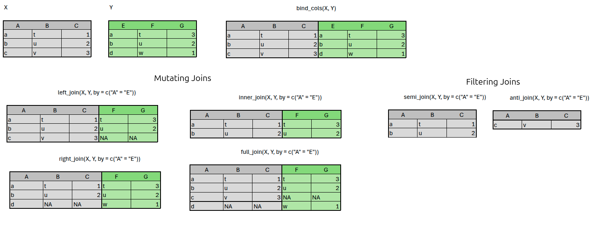
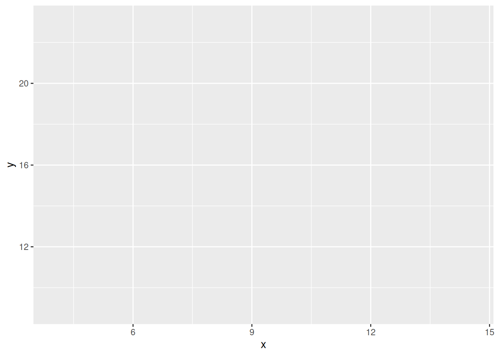
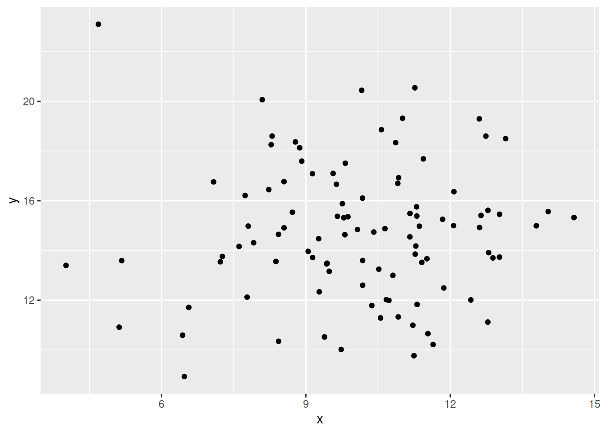
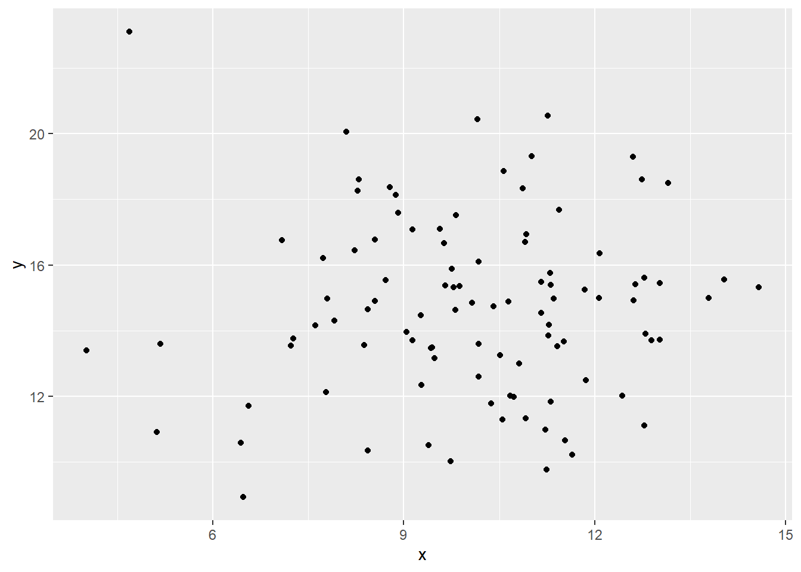
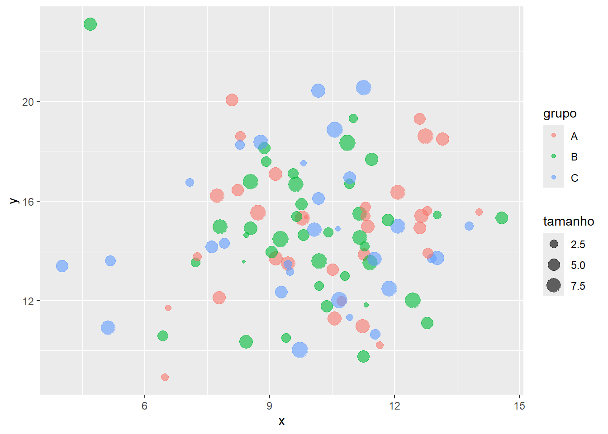
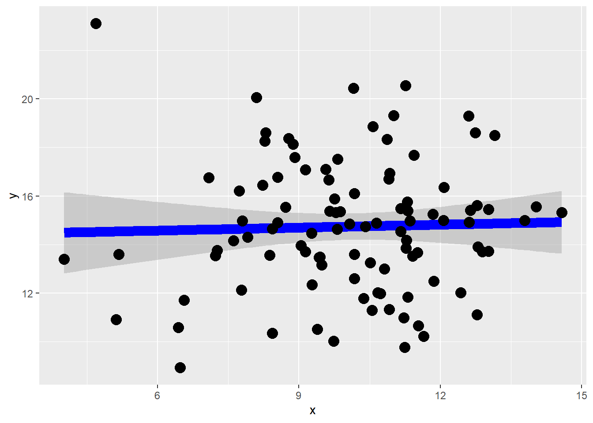
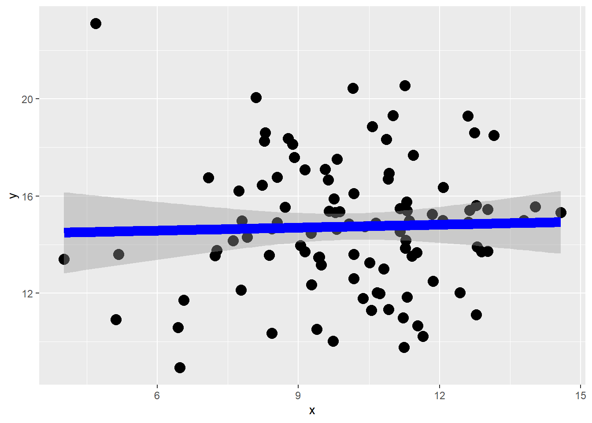
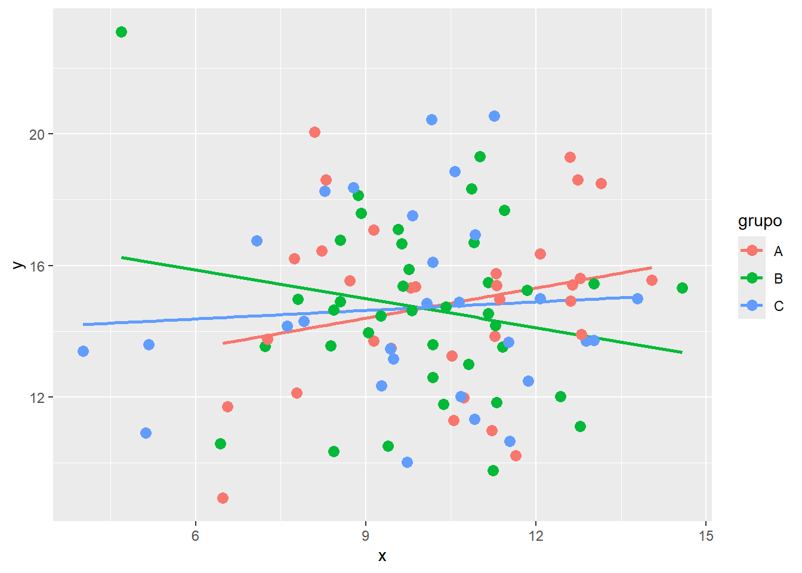
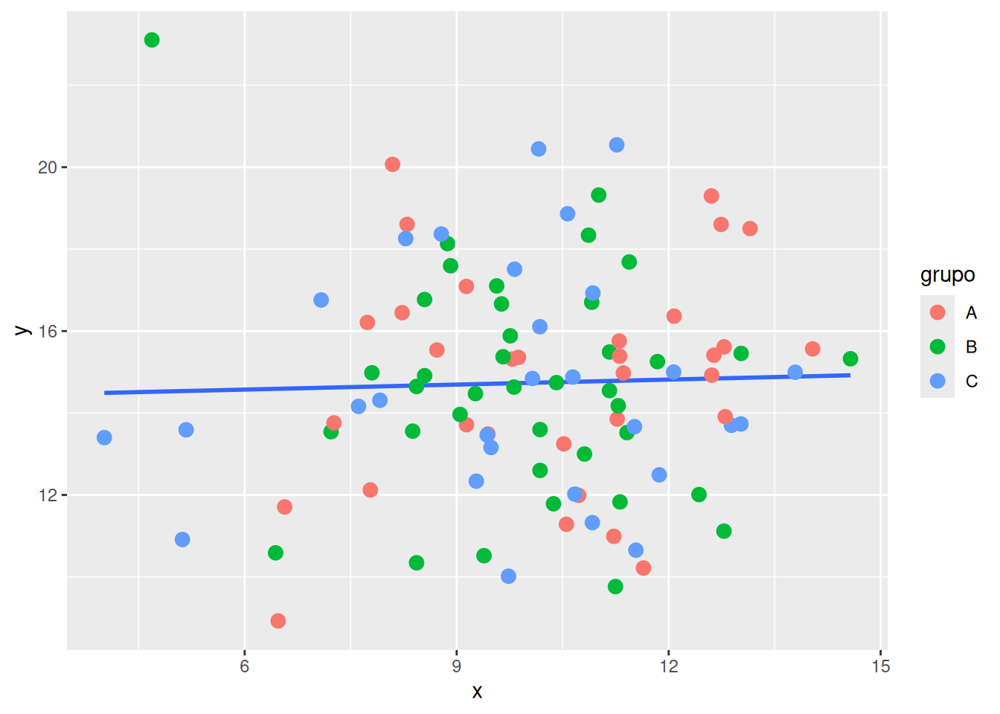

Relatório do segundo treinamento onde foi apresentado como importar dados e manipulá-los no R, bem como as principais estatísticas descritivas univariadas e multivariadas.
Pacotes (package) são coleções de funções, dados e documentação que estendem as capacidades do R base (aquele que você recebe na instalação padrão). São como “caixas de ferramentas” especializadas que você adiciona ao R para realizar tarefas específicas, então você tem pacotes para elaboração de gráficos, para certos tipos de análises, para manipulação de dados, para leitura (importação) de dados. Em https://cran.r-project.org/web/views/ há uma “breve” lista de pacotes conforme a sua finalidade.
Mostrar código
# funções no R baselength(ls("package:base"))
[1] 1270
Mostrar código
# funções especializadas no pacote dplyrlength(ls("package:dplyr"))
[1] 297
Mostrar código
# um pacote possui um conjunto de arquivos associadossystem.file(package ="ggplot2") %>%list.files()
Por padrão, ao iniciar uma sessão no R, serão carregados os pacotes e funções associados ao R base. Os demais devem ser instalados primeiramente, e depois carregados na seção para serem usados.
# verificando se um pacote já está instaladosum(installed.packages()[, "Package"] =='dplyr')
[1] 1
Mostrar código
any(installed.packages()[, "Package"] =='dplyr')
[1] TRUE
Mostrar código
"ggplot2"%in%rownames(installed.packages())
[1] TRUE
A instalação de pacotes no R é feita usando a função install.packages ou devtools::install_github para pacotes que estão no github e não em um repositório de pacotes.
Mostrar código
# pelo repositório oficial (na web)install.packages("ggplot2")install.packages(c("dplyr", "tidyr", "readr")) # instalando vários pacotes de uma vez# Instalar o pacote e todas dependências relacionadas a eleinstall.packages("ggplot2", dependencies =TRUE)# instalar de um arquivo localinstall.packages("caminho/para/pacote.tar.gz", repos =NULL, type ="source")# Instalar pacote mantido no GitHubinstall.packages("devtools")devtools::install_github("tidyverse/ggplot2")# Usar outros repositórios para instalaçãoinstall.packages("ggplot2", repos ="https://cloud.r-project.org/")
Para carregar um pacote em uma sessão usamos library() ou require(). A diferença entre os dois é que, na ausência do pacote que você pretende carregar, library gera um erro, enquanto o require retorna um valor FALSE invisível, o qual pode ser usado, por exemplo, para criar uma lógica em seu script para instalar o pacote caso o mesmo não possa ser carregado ou, então, para gerar uma mensagem no terminal indicando essa ausência do pacote.
Mostrar código
library(ggplot2)# Não exibir mensagens de carregamento do pacotesuppressPackageStartupMessages(library(ggplot2))# criando uma lógica simples com require para instalar pacotes que# não possam ser carregadosif(!require(ggplot2)) {install.packages("ggplot2")require(ggplot2)}# usando uma função do pacote sem o carregar (namespace qualification)head(dplyr::filter(mtcars, mpg >20), 2)
# carregando vários pacotes de uma lista de nomespacotes <-c("ggplot2", "dplyr", "tidyr")x <-lapply(pacotes, library, character.only =TRUE, quietly =TRUE)
Além dessas funções para instalação e carregamento de pacotes, também outras funções que devem ser conhecidas na rotina são as de atualização (update.packages()) e remoção (remove.packages()) de pacotes, descrição (packageDescription()), versão (packageVersion()) e forma recomendada pelo seus autores de citação (citation()) quando usada em uma publicação.
Mostrar código
# Atualização de pacotesupdate.packages() # todosupdate.packages(ask =FALSE) # todos, mas exige confirmação# apagar um pacoteremove.packages("nome_pacote")
Mostrar código
# descrição e versãopackageDescription("ggplot2")
Package: ggplot2
Title: Create Elegant Data Visualisations Using the Grammar of Graphics
Version: 4.0.0
Authors@R: c( person("Hadley", "Wickham", , "hadley@posit.co", role =
"aut", comment = c(ORCID = "0000-0003-4757-117X")),
person("Winston", "Chang", role = "aut", comment = c(ORCID =
"0000-0002-1576-2126")), person("Lionel", "Henry", role =
"aut"), person("Thomas Lin", "Pedersen", ,
"thomas.pedersen@posit.co", role = c("aut", "cre"), comment =
c(ORCID = "0000-0002-5147-4711")), person("Kohske",
"Takahashi", role = "aut"), person("Claus", "Wilke", role =
"aut", comment = c(ORCID = "0000-0002-7470-9261")),
person("Kara", "Woo", role = "aut", comment = c(ORCID =
"0000-0002-5125-4188")), person("Hiroaki", "Yutani", role =
"aut", comment = c(ORCID = "0000-0002-3385-7233")),
person("Dewey", "Dunnington", role = "aut", comment = c(ORCID =
"0000-0002-9415-4582")), person("Teun", "van den Brand", role =
"aut", comment = c(ORCID = "0000-0002-9335-7468")),
person("Posit, PBC", role = c("cph", "fnd"), comment = c(ROR =
"03wc8by49")) )
Description: A system for 'declaratively' creating graphics, based on
"The Grammar of Graphics". You provide the data, tell 'ggplot2'
how to map variables to aesthetics, what graphical primitives
to use, and it takes care of the details.
License: MIT + file LICENSE
URL: https://ggplot2.tidyverse.org,
https://github.com/tidyverse/ggplot2
BugReports: https://github.com/tidyverse/ggplot2/issues
Depends: R (>= 4.1)
Imports: cli, grDevices, grid, gtable (>= 0.3.6), isoband, lifecycle (>
1.0.1), rlang (>= 1.1.0), S7, scales (>= 1.4.0), stats, vctrs
(>= 0.6.0), withr (>= 2.5.0)
Suggests: broom, covr, dplyr, ggplot2movies, hexbin, Hmisc, knitr,
mapproj, maps, MASS, mgcv, multcomp, munsell, nlme, profvis,
quantreg, ragg (>= 1.2.6), RColorBrewer, rmarkdown, roxygen2,
rpart, sf (>= 0.7-3), svglite (>= 2.1.2), testthat (>= 3.1.5),
tibble, vdiffr (>= 1.0.6), xml2
Enhances: sp
VignetteBuilder: knitr
Config/Needs/website: ggtext, tidyr, forcats, tidyverse/tidytemplate
Config/testthat/edition: 3
Config/usethis/last-upkeep: 2025-04-23
Encoding: UTF-8
LazyData: true
RoxygenNote: 7.3.2
Collate: 'ggproto.R' 'ggplot-global.R' 'aaa-.R'
'aes-colour-fill-alpha.R' .....
NeedsCompilation: no
Packaged: 2025-08-19 08:21:45 UTC; thomas
Author: Hadley Wickham [aut] (ORCID:
<https://orcid.org/0000-0003-4757-117X>), Winston Chang [aut]
(ORCID: <https://orcid.org/0000-0002-1576-2126>), Lionel Henry
[aut], Thomas Lin Pedersen [aut, cre] (ORCID:
<https://orcid.org/0000-0002-5147-4711>), Kohske Takahashi
[aut], Claus Wilke [aut] (ORCID:
<https://orcid.org/0000-0002-7470-9261>), Kara Woo [aut]
(ORCID: <https://orcid.org/0000-0002-5125-4188>), Hiroaki
Yutani [aut] (ORCID: <https://orcid.org/0000-0002-3385-7233>),
Dewey Dunnington [aut] (ORCID:
<https://orcid.org/0000-0002-9415-4582>), Teun van den Brand
[aut] (ORCID: <https://orcid.org/0000-0002-9335-7468>), Posit,
PBC [cph, fnd] (ROR: <https://ror.org/03wc8by49>)
Maintainer: Thomas Lin Pedersen <thomas.pedersen@posit.co>
Repository: CRAN
Date/Publication: 2025-09-11 07:10:02 UTC
Built: R 4.3.3; ; 2025-10-07 18:16:38 UTC; unix
-- File: /home/marcelo/R/x86_64-pc-linux-gnu-library/4.3/ggplot2/Meta/package.rds
Mostrar código
packageVersion("ggplot2")
[1] '4.0.0'
Mostrar código
# forma de citaçãocitation("ggplot2")
To cite ggplot2 in publications, please use
H. Wickham. ggplot2: Elegant Graphics for Data Analysis.
Springer-Verlag New York, 2016.
A BibTeX entry for LaTeX users is
@Book{,
author = {Hadley Wickham},
title = {ggplot2: Elegant Graphics for Data Analysis},
publisher = {Springer-Verlag New York},
year = {2016},
isbn = {978-3-319-24277-4},
url = {https://ggplot2.tidyverse.org},
}
Algo a se ter em mente é que nada impede de vários pacotes terem o mesmo nome para funções com finalidades diferentes. Nesse caso, ao carregar esses pacotes, o último a ser carregado irá mascarar o nome da anterior no seu ambiente. Assim, para evitar conflitos, ou o uso da função errada, recomenda-se usar a função seguindo o padrão nome_do_pacote::nome_da_função.
1.2 Leitura de datasets externos ao R
A importação de dados é o primeiro passo em qualquer análise. O R oferece múltiplos pacotes especializados para diferentes formatos de arquivos, mas iremos focar nos pacotes de leitura dos arquivos provenientes dos softwares Excel, SAS, Stata e SPSS. Para isso, utilizaremos os pacotes readxl e haven.
Mostrar código
# mini rotina para instalar um pacote se ainda não estiver instaladoinstala_se_nao_existe <-function(nome_do_pacote){if(nome_do_pacote %in%rownames(installed.packages())) return()install.packages(nome_do_pacote)}lapply(c("readxl", "haven"), instala_se_nao_existe)# Carregar pacoteslibrary(readxl) # Excellibrary(haven) # SAS, SPSS, STATA
1.2.1 Importando dados do Excel
Para leitura de arquivos do Excel nos formatos .xls e .xlsx usaremos o pacote readxl, o qual faz parte do conjunto de pacotes do tidyverse. Dele podemos usar as funções read_excel(), read_xls() ou read_xlsx(), os quais recebem argumentos semelhantes, com a diferença que os dois últimos são específicos ao formato do arquivo.
O primeiro e mais importante argumento a ser fornecido para essa função é o path, o local onde o arquivo se encontra no seu computador. Esse caminho pode ser absoluto (desde a raiz, normalmente / no linux ou C: no windows, até o local) ou relativo ao diretório de trabalho (que pode ser verificado usando a função getwd()).
Como os arquivos do Excel aceitam múltiplas planilhas (em diferentes abas), o argumento de sheet do read_excel() permite escolher qual aba se pretende carregar. Caso seja necessário verificar primeiro o nome das abas disponíveis no arquivo, use excel_sheets(path).
Outro problema comum em arquivos do Excel são planilhas que não iniciam na linha 1 ou que apresentam um conjunto de colunas que não pretendemos usar (sem conteúdo ou preenchido com informações que não fazem parte do dateset). Para contornar esses obstáculos, podemos usar o argumento skip com o número de linhas iniciais que não devem ser lidas, ou usar o range com um character indicando a primeira e última células que delimitam seus dados (por exemplo, range = "B2:D20" indica que devem ser lidas as colunas B, C e D, das linhas 2 até a 20).
Por padrão, essas funções buscam adivinhar o tipo de dados presente em cada coluna da planilha, mas é possível declarar o tipo usando o argumento col_types com um vetor com comprimento igual ao número de colunas que irá importar. Esse vetor deve, para cada coluna, usar uma das opções:
“skip”: remove a coluna do dataset
“guess”: deixa para a função escolher o tipo
“logical”: booleano
“numeric”: numérico
“date”: data
“text”: character
“list”: lista
Também por padrão, a primeira linha é usada para obter os nomes de cada coluna. Se você não possui nomes das colunas na sua planilha use col_names = FALSE na função ou passe um vetor dos nomes das colunas para o argumento col_names.
Um aspecto importante de qualquer conjunto de dados é saber como foram codificados os dados ausentes. O argumento na permite passar um vetor de character com os códigos usados na planilha para declarar um dado ausente, o qual será convertido para NA no R.
# definir a planilha por nome ou índicedados_pela_aba <-read_excel("../datasets/excel/ap2.xlsx", sheet ="Data")dados_pela_aba <-read_excel("../datasets/excel/ap2.xlsx", sheet =1)# carregar somente um intervalo de células, em que a linha 1 não é headerdados_pelo_range <-read_excel("../datasets/excel/ap2.xlsx",range ="A2:B100",sheet ="Data",col_names =FALSE)
# mesmo exemplo, mas definindo os nomes das colunasdados_pelo_range <-read_excel("../datasets/excel/ap2.xlsx",range ="A2:B100",sheet ="Data",col_names =c('fazenda', 'lote'))head(dados_pelo_range)
# definir os códigos usados na planilha para dados ausentesdados_na <-read_excel("../datasets/excel/ap2.xlsx",na =c("", "NA", "N/A", "-"))
1.2.2 Importando dados do Stata
Para leitura de arquivos do Stata no formato .dta usaremos o pacote heaven, o qual possui funções para leitura de arquivos do Stata, SPSS e SAS. Nesse treinamento vamos focar na função read_dta() para leitura dos arquivos do Stata (superiores a versão 13.0).
Assim como no read_excel(), o primeiro argumento de read_dta() deve ser a localização do arquivo. Além disso, a função aceita como argumentos encoding, a codificação de carácteres usada, skip para remover um certo número de linhas, col_select para definir quais colunas serão selecionadas e n_max para declarar o número máximo de linhas que devem ser importadas.
Um diferença importante entre arquivos do Excel e do Stata é que no segundo o dataset e as suas variáveis podem conter metadados (“notes” e “labels”) com informações sobre esses dados. Essas informações podem ser acessadas na função attr().
serological reac. against A.pleuropneumoniae serotype 2 at age_t
mp_t
serological reac. against M.hyopneumoniae at age_t
infl_t
serological reac. against Influenza virus at age_t
prrs_t
serological reac. against PRRS virus at age_t
ap2_t6
serological reac. against A.pleuropneumoniae serotype 2 at age_t6
mp_t6
serological reac. against M.hyopneumoniae at age_t6
infl_t6
serological reac. against Influenza virus at age_t6
prrs_t6
serological reac. against PRRS virus at age_t6
ap2_sc
seroconversion to ap2 during the finishing period
1.2.3 Verificação e diagnóstico dos dados importados
Uma vez carregados os dados, é importante avaliar a estrutura desse conjunto de dados importado. Para uma exploração inicial, será interessante avaliar, no mínimo, as dimensões desses dados (número de observações e variáveis), quais os tipos das variáveis no R, resumos estatísticos simples, quantidade de valores ausentes por variável.
Mostrar código
verificar_dados <-function(dados) {cat("Dimensões:", dim(dados), "\n")cat("Tipos de variáveis:\n")print(sapply(dados, class))cat("\nPrimeiras linhas:\n")print(head(dados, 3))cat("\nResumo estatístico:\n")print(summary(dados))cat("\nValores missing por coluna:\n")print(colSums(is.na(dados)))cat("\nStructura dos dados:\n")str(dados)}# Aplicar a qualquer dataset importadoverificar_dados(dados_stata)
Por fim, em grandes datasets é comum que os dados sejam registrados em múltiplos arquivos (principalmente no Excel, por causa do limite de linhas). Nesse caso, para não ser necessário carregar cada um desses arquivos e depois construir um data.frame que uni todos, podemos usar recursos de programação funcional do pacote purrr para importar diretamente todos os arquivos em um único data.frame.
Mostrar código
library(purrr)# obter uma lista dos arquivos que serão importados e# mapear todos os arquivos para um unico data.framedados <-list.files("datasets/csv", pattern ="\\.csv$", full.names =TRUE) |>map_df(read_csv2)
Quadro Resumo das funções que podem ser usadas na importação de arquivos externos ao R
Formato
Pacote
Função
CSV
readr
read_delim(), read_csv(), read_csv2()
Excel
readxl
read_excel(), read_xls(), read_xlsx()
SAS
haven
read_sas()
SPSS
haven
read_sav()
Stata
haven
read_stata(), read_dta()
Múltiplos
rio
import()
2 Manipulação de dados com os pacotes do tidyverse
O tidyverse é uma coleção de pacotes R voltados para a ciência de dados, que compatilham uma mesma filosofia, gramática e estruturas de dados. Ele é composto dos seguintes pacotes:
tibble: extensão do data.frame;
dplyr: funções na forma de verbos que fornece a gramática para a manipulação dos dados;
tidyr: funções para obtenção dos dados que seguem a filosia dos “dados arrumados”;
readr: importação de dados tabulares (csv, tsv, fwf);
purrr: programação funcional;
stringr: manipulação de strings (character);
forcats: manipulação de fatores (factor);
lubridate: manipulação de datas (date);
ggplot2: criação de gráficos.
Mostrar código
# Carregar todo o conjunto de pacoteslibrary(tidyverse)# Ou carregar pacotes individuaislibrary(dplyr)library(tidyr)library(readr)
Como já mencionado, o tidyverse segue a filosofia de “dados arrumados” (tidy data), o que basicamente significa que:
cada variável forma uma coluna;
cada unidade observacional (unidade amostral) forma uma linha;
O tibble facilita a compreensão dos seus dados, uma vez que sua impressão (com print) apresenta o tipo de cada variável, não imprime o conjunto completo (somente as primeiras linhas) e não faz conversões automáticas de variáveis character para factor. Além disso, ele aceita nomes não sintáticos do R para as variáveis (usando ``).
Uma diferença importante entre tibble e data.frame está na forma como você extrai uma variável do conjunto. No data.frame usamos os padrões nome_do_dataframe["nome_da_coluna"], nome_do_dataframe[indice_da_coluna] ou nome_do_dataframe$nome_da_coluna. No tibble usamos os padrões nome_do_tibble$nome_da_coluna, nome_do_tibble[[indice_da_coluna]], nome_do_tibble[["nome_da_coluna"]] ou, ainda, extrair por meio do pipe com nome_do_tibble %>% .$nome_da_coluna, nome_do_tibble %>% .[["nome_da_coluna"]] ou nome_do_tibble |> pull("nome_da_coluna").
Mostrar código
# extraindo uma variável do tibbledados_tidy %>% .$idade_anos
[1] 7 4 9 5 4 10
Mostrar código
dados_tidy %>% .[["idade_anos"]]
[1] 7 4 9 5 4 10
Mostrar código
dados_tidy |>pull("idade_anos")
[1] 7 4 9 5 4 10
2.1 O pipe (%>% e |>)
O pipe permite agrupar em um código que parece ser uma única operação múltiplas operações (chamadas de funções), em que o resultado de uma operação e fornecido como o primeiro argumento da subsequente. Isso torna o código mais legível.
Mostrar código
# Sem pipe, com funções aninhadasresultado <-summarise(group_by(filter(dados_tidy, peso_kg >10), especie ),peso_medio =mean(peso_kg))# ou criando várias etapasdados_filtrados <-filter(dados_tidy, peso_kg >10)dados_agrupados <-group_by(dados_filtrados, especie)resultado <-summarise(dados_agrupados, peso_medio =mean(peso_kg))# Com pipe do tidyverse (%>%)resultado <- dados_tidy %>%filter(peso_kg >10) %>%group_by(especie) %>%summarise(peso_medio =mean(peso_kg))# com pipe nativo do R 4.1+ (|>)resultado <- dados_tidy |>filter(peso_kg >10) |>group_by(especie) |>summarise(peso_medio =mean(peso_kg))
2.2 Manipulação dos dados com o dplyr
Usamos o select() para obter um subconjunto do nosso dataset com somente as variáveis de interesse.
# seleção de colunas pelo nome ou com vetor de caractéresdf_exemplo %>%select(id, especie, peso)df_exemplo %>%select(c("id", "especie", "peso"))# Seleção com funções helpers# starts_with para as colunas que iniciam com certo valordf_exemplo %>%select(starts_with("data"))# ends_with para as colunas que terminam com certo valordf_exemplo %>%select(ends_with("do"))# contains para as colunas que possuem um certo valordf_exemplo %>%select(contains("ac"))# where para colunas que correspondem a TRUE para alguma função de retorno lógicodf_exemplo %>%select(where(is.numeric))# usando padrão de fórmula para múltiplas condiçõesdf_exemplo %>%select(where(~is.numeric(.x) &&min(.x) >10))# Seleção pela exclusão de determinadas colunasdf_exemplo %>%select(-id, -data_consulta)df_exemplo %>%select(-c("id", "data_consulta"))# Seleção com renomeação de determinadas colunasdf_exemplo %>%select(identificador = id,tipo_animal = especie,everything() )
Usamos o filter() para obter um subconjunto do nosso dataset com somente as observações que atendem a uma determinada condição.
Mostrar código
# Filtro básicodf_exemplo %>%filter(especie =="cão")# Múltiplas condições# AND - , ou &df_exemplo %>%filter(especie =="gato", peso >10, vacinado ==TRUE)df_exemplo %>%filter(especie =="gato"& peso >10& vacinado ==TRUE)# OR - |df_exemplo %>%filter(especie =="cão"| especie =="gato")# agrupando os OR de == com %in%df_exemplo %>%filter(especie %in%c("cão", "gato"))# Filtros com funções# between para min <= x <= maxdf_exemplo %>%filter(between(idade, 5, 10))df_exemplo %>%filter(!is.na(temperatura))
Usamos o mutate() para criar ou modificar variáveis.
Mostrar código
# criar colunas# case_when para construir uma variável baseado em condições das demaisdf_exemplo %>%mutate(score_inventado = peso / (idade ^0.5),categoria_idade =case_when( idade <1~"Filhote", idade <7~"Adulto",TRUE~"Idoso" ) ) %>%select(id, especie, idade, categoria_idade, score_inventado)# modificar colunasdf_exemplo %>%mutate(peso =round(peso, 0),temperatura = temperatura *9/5+32 )# transformações em várias colunas# scale centraliza a variável (desvio / desvio-padrão)# cuidado para multiplos across no mutate, a ordem importadf_exemplo %>%mutate(across(where(is.numeric), ~round(.x, 1)),across(c(peso, temperatura), ~scale(.x)[,1], .names ="{.col}_z") )df_exemplo %>%mutate(across(c(peso, temperatura), ~scale(.x)[,1], .names ="{.col}_z"),across(where(is.numeric), ~round(.x, 1)) )# transmute() - mantém apenas as colunas criadasdf_exemplo %>%transmute( id,peso_libras = peso *2.205,idade_meses = idade *12 )
Usamos o arrange() para ordenar as variáveis por uma ou mais variáveis.
Mostrar código
# Ordenação crescente por uma variáveldf_exemplo %>%arrange(peso)# Ordenação decrescente por uma variáveldf_exemplo %>%arrange(desc(peso))# Ordenação múltipladf_exemplo %>%arrange(especie, desc(idade), peso)# Ordenação com NAdf_exemplo %>%arrange(desc(is.na(temperatura)), temperatura)
Para criar agregações (resumos estatíticos) usamos summarise() e o group_by() caso esse resumo deva ser calculado para cada categoria de determinada variável.
Para obter um subconjunto de observações também podemos usar funções da família slice_*.
Mostrar código
# Primeiras ou últimas n observaçõesdf_exemplo %>%slice_head(n =5)df_exemplo %>%slice_tail(n =5)# Linhas específicasdf_exemplo %>%slice(c(1, 5, 10))# Amostragem "aleatória"df_exemplo %>%slice_sample(n =10)df_exemplo %>%slice_sample(prop =0.1)# Extremos por grupodf_exemplo %>%group_by(especie) %>%slice_max(peso, n =3) # 3 maiores valoresdf_exemplo %>%group_by(especie) %>%slice_min(idade, n =2) # 2 menores valores# retornando exatamente o valor ndf_exemplo %>%group_by(especie) %>%slice_min(idade, n =2, with_ties =FALSE)
Para obter os valores únicos de uma ou mais variáveis usamos distinct().
Mostrar código
# Valores únicos de uma colunadf_exemplo %>%distinct(especie)# Combinações únicas# .keep_all = TRUE para manter as outras colunasdf_exemplo %>%distinct(especie, vacinado, .keep_all =TRUE)# Remover duplicatasdf_exemplo %>%distinct()
Para contagem de ocorrências usamos count() e add_count().
Mostrar código
# quantidade de observações por categoriadf_exemplo %>%count(especie, sort =TRUE, name ="Amostra")# Contagem com pesodf_exemplo %>%count(especie, wt = peso, name ="peso_total")# mesmo que agrupar e agregar para a somadf_exemplo %>%group_by(especie) %>%summarise(peso_total =sum(peso) )# Adicionar contagem sem agregardf_exemplo %>%add_count(especie, name ="n_por_especie") %>%add_count(especie, wt = peso, name ="peso_por_especie") %>%select(id, especie, n_por_especie, peso_por_especie)
2.3 Reestruturação dos dados com o tidyr
Algumas vezes os dados importados apresentam um conjunto de colunas que precisam ser transformadas em uma única com seu valor e outra com a categoria, ou o contrário. Para conseguir isso usamos as funções pivot_longer() e pivot_wider(). pivot_longer() retorna um dataset com mais observações e menos colunas, usando os nomes das colunas alvo para construir uma variável e o valor de cada coluna para construir outra. pivot_wider() retorna um dataset com mais colunas e menos observações, usando os valores de uma ou mais colunas alvo para criar novas variáveis e outra coluna para extrair os valores.
Também é possível separar os valores de uma variável em novas variáveis usando o separate() ou unir os valores de diferentes variáveis em uma única usando o unite().
Quando temos dados ausentes (NA) em variáveis do nosso conjunto de dados, normalmente, algum tratamento será necessário para lidar com essas observações, seja removendo elas ou substituindo por outro valor. fill() substitui os valores NA das variáveis alvo por valores anteriores e posteriores àquela observação no conjunto de dados, enquanto replace_na() substitui os valores NA por um valor padrão. Já o drop_na() remove a unidade observacional inteira que apresente um NA nas variáveis alvo.
Por vezes em nossa análise chegamos em um ponto onde é necessário dividir nosso dataset em multiplos conjuntos, baseado em alguma categoria, seja para aplicar algum teste ou ajustar um modelo. Esse processo, normalmente, envolveria criar várias variáveis cada uma com o dataset filtrado para a categoria de interesse e depois aplicar o teste a cada uma desses subconjuntos. Entretanto, o tidyr oferece uma estratégia mais elegante para esse processo por meio do aninhamento usando o nest(). O nest() permite criar um novo tibble em que, em uma coluna do tipo lista, cada observação se torna um tibble filtrado para a categoria de interesse, assim, podemos aplicar o teste de forma iterativa em cada um, por meio de funções de programação funcional do purrr, mantendo também o resultado em formato de lista para cada observação.
Call:
lm(formula = peso ~ idade, data = .x)
Residuals:
Min 1Q Median 3Q Max
-10.5686 -3.9560 0.4428 2.6257 12.5723
Coefficients:
Estimate Std. Error t value Pr(>|t|)
(Intercept) 12.1732 1.9516 6.237 3e-07 ***
idade 0.3133 0.2401 1.305 0.2
---
Signif. codes: 0 '***' 0.001 '**' 0.01 '*' 0.05 '.' 0.1 ' ' 1
Residual standard error: 5.364 on 37 degrees of freedom
Multiple R-squared: 0.04399, Adjusted R-squared: 0.01816
F-statistic: 1.703 on 1 and 37 DF, p-value: 0.2
Mostrar código
dados_aninhados$teste_media_peso_vacinado[[1]]
Welch Two Sample t-test
data: peso by vacinado
t = 0.0048531, df = 34.736, p-value = 0.9962
alternative hypothesis: true difference in means between group FALSE and group TRUE is not equal to 0
95 percent confidence interval:
-3.539016 3.555972
sample estimates:
mean in group FALSE mean in group TRUE
14.46500 14.45652
2.4 Unindo diferentes tabelas com dplyr
Outra situação com que se depara na análise de dados é a necessidade de importar dados de diferentes planilhas (tabelas), as quais depois precisamos unir em um único dataset, baseado na informação de alguma variável que ocorre em ambas as tabelas. Isso é particularmente comum quando trabalhamos com dados importados de bancos de dados relacionais, onde temos uma tabela que possui uma coluna de chave primária (valores únicos) e outra com chave estrangeira que indica que aquele registro se refere à observação única daquela outra tabela.
Para unir essas tabelas usamos joins, uma operação derivada do SQL, uma linguagem de consulta de banco de dados relacionais. joins guardam uma semelhança com a teoria de conjuntos (união, diferença, intersercção).

Tipos de joins do dplyr
Mostrar código
animais <-tibble(id =1:5,nome =c("Rex", "Mia", "Bob", "Luna", "Max"),especie =c("cão", "gato", "cão", "gato", "coelho"))consultas <-tibble(id_animal =c(1, 2, 1, 3, 6), # id 6 não existe no tibble animaisdata =as.Date(c("2023-01-10", "2023-01-15", "2023-02-01","2023-02-10", "2023-02-15" )),motivo =c("vacina", "checkup", "checkup", "vacina", "emergência"))# inner_join - mantém apenas registros com correspondênciainner <- animais %>%inner_join(consultas, by =c("id"="id_animal"))# left_join - mantém todos da esquerdaleft <- animais %>%left_join(consultas, by =c("id"="id_animal"))# right_join - mantém todos da direitaright <- animais %>%right_join(consultas, by =c("id"="id_animal"))# full_join - mantém todosfull <- animais %>%full_join(consultas, by =c("id"="id_animal"))# semi_join - mantém linhas de L que têm match em Ranimais_com_consulta <- animais %>%semi_join(consultas, by =c("id"="id_animal"))# anti_join - mantém linhas de L que NÃO têm match em Ranimais_sem_consulta <- animais %>%anti_join(consultas, by =c("id"="id_animal"))
2.5 Manipulando texto, datas e fatores com stringr, lubridate e forcats
Quando nosso dataset possui variáveis que representam um texto, por exemplo, uma resposta aberta, é normal ter que manipular essa variável para padronizá-la antes de uma análise. O stringr oferece um conjunto de funções que permitem manipular dados do tipo character, que inclui meios de tranformar o texto em maiúsculas ou minúsculas, detectar certas palavras, contar o número de ocorrências de uma palavra, remover ou substituir uma palavra por outra ou, ainda, usar expressões regulares (REGEX) para tranformar seus dados iniciais.
Mostrar código
exemplo <-tibble(id =1:5,descricao =c(" Infecção respiratória AGUDA ","dermatite alérgica crônica","FRATURA do fêmur esquerdo","gastroenterite viral","Otite média bilateral" ))# Funções básicasdiagnosticos_limpos <- exemplo %>%mutate(# Remover espaços extras no inicio e fim do textodescricao_limpa =str_trim(descricao),# Converter para minúsculasdescricao_lower =str_to_lower(descricao_limpa),# Converter para título ("Um Texto Dessa Forma")descricao_title =str_to_title(descricao_limpa),# Detectar padrõestem_infeccao =str_detect(descricao_lower, "infec"),# Extrair palavrasprimeira_palavra =str_extract(descricao_limpa, "^\\w+"),# Substituirdescricao_mod =str_replace(descricao_lower, "aguda|crônica", "***"),# Contar palavrasn_palavras =str_count(descricao_limpa, "\\w+") )diagnosticos_limpos# Expressões regularestelefones <-c("(11) 1234-5678", "11-98765.4321", "1112345678", "11 1234 5678")telefones_limpos <- telefones %>%str_remove_all("[^0-9]") %>%# Remove tudo exceto númerosstr_replace("^(\\d{2})(\\d{4,5})(\\d{4})$", "(\\1) \\2-\\3")telefones_limpos
O lubridate por sua vez permite trabalhar com dados temporais (data e tempo). Com ele você converter dados para os tipos Date e POSIXct (date-time), usar aritméticas entre datas, adcionar ou remover timezones, além de criar períodos, durações e intervalos.
Mostrar código
datas_texto <-c("01/03/2023", "15-06-2023", "2023-12-25")datas <-tibble(texto = datas_texto,data_dmy =dmy(c("01/03/2023", "15/06/2023", "25/12/2023")),data_dmy_hm =dmy_hm(c("01/03/2023 15:20", "15/06/2023 08:12", "25/12/2023 17:30")),data_ymd =ymd("2023-12-25"))class(df_exemplo$data_consulta)# obter os componentes da dataconsultas_datas <- df_exemplo %>%mutate(ano =year(data_consulta),mes =month(data_consulta, label =TRUE),dia =day(data_consulta),dia_semana =wday(data_consulta, label =TRUE),semana_epidemio =epiweek(data_consulta),trimestre =quarter(data_consulta),dia_ano =yday(data_consulta) )intervencoes <-tibble(inicio =ymd(c("2023-01-01", "2023-03-15", "2023-06-01")),fim =ymd(c("2023-01-15", "2023-04-01", "2023-06-30"))) %>%mutate(duracao_dias =as.numeric(fim - inicio),duracao_semanas =as.numeric(difftime(fim, inicio, units ="weeks")),meio_periodo = inicio +days(as.integer(duracao_dias /2)) )# criando periodosintervencoes$inicio +years(1)# criando duraçõesintervencoes$inicio +dyears(1)# criando intervalosintevalo_um_ano <-interval( intervencoes$inicio, intervencoes$inicio +years(1))# testando se uma data está dentro de um intervalo(intervencoes$inicio[1] +days(20)) %within% intevalo_um_ano# Sequências de datascalendario_vacinacao <-tibble(data =seq(ymd("2023-01-01"), ymd("2023-12-31"), by ="month"),tipo ="Vacinação mensal")# Arredondar datasagora <-now()tibble(original = agora,hora =floor_date(agora, "hour"), # floor arredonda para baixodia =round_date(agora, "day"), # round arredonda para o mais próximosemana =ceiling_date(agora, "week"), # ceiling arredonda para cimames =floor_date(agora, "month"))
Para finalizar nossa seção sobre o tidyverse temos o pacote forcats para manipulação de fatores. Ele possui ferramentas para alterar ou reordenar os fatores de uma variável de forma simples.
Os pacotes apresentados possuem uma grande gama de ferramentas, e nem todas serão apresentadas no nosso treinamento. Caso queira aprender mais sobre elas, recomendo o livro R para Ciência de Dados, o qual possui uma versão online de acesso aberto ou a documentação dos pacotes do tidyverse que podem ser encontrados em https://www.tidyverse.org/packages/.
3 Estatística descritiva
Estatísticas descritivas fazem parte de todo trabalho de análise de dados. Podemos ver ela como um passo inicial, em que você utiliza técnicas de análise exploratória para entender melhor o comportamento dos seus dados considerando o todo, por meio de tabelas, gráficos e medidas-resumo. Na estatística descritiva univariada buscamos o comportamento de uma variável isolada das demais do conjunto de dados, enquanto nas estatísticas bivariada ou multivariada exploramos o comportamento em conjunto de duas ou mais variáveis.
O tipo de variável em estudo irá influenciar na técnica que você escolhe para analisá-la, assim, podemos sintetizar as possibilidades de análise da seguinte forma para estatísticas univariadas:
flowchart TD
A[Tipo de Variável]
A --> B[Qualitativa]
%% Qualitativa
B --> B1[Tabelas]
B1 --> B11[Distribuição de frequências]
B --> B2[Gráficos]
B2 --> B21["Barras (horizontal e vertical)"]
B2 --> B22[Setores ou Pizzas]
B2 --> B23[Diagrama de Pareto]
Estatísticas descritivas univariadas para variáveis qualitativas. Fonte: adaptado de Favaro et al. (2017)
flowchart TD
classDef groupBox fill:#f2f7ff;
A[Tipo de<br>Variável]
C[Quantitativa]
A--> C
C --> M[Medidas‑resumo]
C --> T[Tabelas] --> T1[Distribuição de frequências]
M --> P["Posição ou<br>Localização"]
M --> D["Dispersão ou<br>Variabilidade"]
M --> F[Forma]
%% Posição/Localização: coluna vertical
subgraph POS[" "]
direction TB
P0[Tendência<br>Central]
P1[Média]
P2["Moda*"]
P3[Mediana]
%% Empilhar verticalmente sem setas “hierárquicas”
P0 --- P1
P1 --- P2
P2 --- P3
end
%% Conectar o rótulo principal a este grupo
P --> P0
%% Dispersão (mantém horizontal, só como contexto)
subgraph DISP[" "]
direction TB
D0[Dispersão ou<br>Variabilidade]
D1[Amplitude]
D2[Desvio‑médio]
D3[Variância]
D4[Desvio‑padrão]
D5[Erro‑padrão]
D6[Coef. variação]
D0 --- D1
D1 --- D2
D2 --- D3
D3 --- D4
D4 --- D5
D5 --- D6
end
D --> D0
subgraph FORMA[" "]
direction TB
F0[Forma]
F1[Assimetria]
F2[Curtose]
F0 --- F1
F1 --- F2
end
F --> F0
class POS,DISP,FORMA groupBox
Estatísticas descritivas univariadas para variáveis quantitativas (tabelas e medidas-resumo). Fonte: adaptado de Favaro et al. (2017)
flowchart TD
A[Tipo de Variável]
A --> C[Quantitativa]
%% Quantitativa - Tabelas e Gráficos
C --> C2[Gráficos]
C2 --> C21[Linhas]
C2 --> C22[Pontos ou Dispersão]
C2 --> C23[Histograma]
C2 --> C24[Ramo-e-folhas]
C2 --> C25[Boxplot]
Estatísticas descritivas univariadas para variáveis quantitativas (gráficos). Fonte: adaptado de Favaro et al. (2017)
3.1 Tabela de distribuição de frequências
Tabelas de frequências representam o número absoluto ou relativo de ocorrências de uma categoria (variáveis qualitativas), valor (variáveis quantitativas discretas) ou intervalo de valores (variáveis quantitativas contínuas).
Assim, a tabela será composta dos possíveis valores:
Frequência absoluta (\(F_i\)): contagem das observações na classe \(i\);
Frequência relativa (\(Fr_i\)): contagem das observações na classe \(i\) em relação ao total de observações da variável;
Frequência acumulada (\(F_{ac_i}\)): soma das observações na classe \(i\) e nas anteriores a ela (só faz sentido se há noção de ordem nos dados);
Frequência acumulada relativa (\(Fr_{ac_i}\)): soma das frequências relativas até a classe \(i\) (inclusive);
No caso de variáveis contínuas, para criarmos tabelas de frequências delas, primeiro criamos classes representado intervalos de valores, depois contamos o número de observações em cada intervalo. O número de classes e o intervalo de cada classe é arbitrário, entretanto, Bussab e Morettin (2011) sugerem o seguinte algoritmo para construção da tabela:
Ordenar os dados do menor ao maior;
Calcular o número de classes (\(k\)) por
\(k=1+1,33 \times \log_{10}{n}\) (Equação de Sturges)
\(k=\sqrt{n}\)
\(n\) é o número de observações e k deve ser arredondado para o inteiro mais próximo;
Calcular o intervalo das classes, \(\Delta_{h}\), como \(\Delta_{h} = \frac{A}{k}\), em que \(A\) é a amplitude (máximo valor menos o mínimo);
Construa os intervalos iniciando pelo menor valor como primeiro limite inferior e somando \(\Delta_{h}\) ao limite inferior de cada classe para obter os limites superiores. Cada intervalo, exceto o primeiro, será aberto (exclui) no limite inferior e fechado (inclui) no superior, e o limite inferior das classes após a primeira serão o limite superior da anterior (ex.: {[1, 11], ]11, 21], ]21, 31], ]31, 41]});
Conte o número de observações que possuem valores dentro de cada intervalo para construir a tabela de frequências.
No R, as tabelas de frequências podem ser obtidas da seguinte forma:
Distribuição de frequências de uma variável quantitativa contínua
Classe
\(F_i\)
\(Fr_i\)
\(F_{ac_i}\)
\(Fr_{ac_i}\)
[12,15]
8
0.7%
8
0.7%
(15,18]
62
5.6%
70
6.3%
(18,21]
125
11.2%
195
17.5%
(21,24]
186
16.7%
381
34.2%
(24,28]
244
21.9%
625
56.1%
(28,31]
157
14.1%
782
70.2%
(31,34]
132
11.8%
914
82.0%
(34,37]
99
8.9%
1013
90.9%
(37,40]
68
6.1%
1081
97.0%
(40,44]
28
2.5%
1109
99.6%
(44,48]
5
0.4%
1114
100.0%
3.2 Representação gráfica dos dados
Os gráficos hoje são insdispensáveis na estatística e análise de dados, servindo como uma ponte entre os dados brutos e seu comportamento em conjunto. Normalmente os usamos para detectar padrões, tendências, anomalias e relações que não seriam percebidos em tabelas ou medidas resumo.
Na análise exploratória de dados (EDA), histogramas, boxplots e gráficos de dispersão permitem identificar a forma da distribuição, detectar outliers e avaliar a simetria. Também usamos gráficos para auxiliar na verificação de suposições de modelos estatísticos, por exemplo, quando criamos um gráfico Q-Q para identificar desvios da normalidade.
Além disso, os gráficos são ferramentas para a comunicação estatística, os quais usamos para traduzir conceitos complexos em representações visuais mais intuitivas e didáticas que facilitem a compreensão por um público que não necessariamente possui um conhecimento formal de estatística, mas que podem ser o alvo dos nossos resultados, por exemplo, um gestor público ou de uma empresa cujas nossas análises poderiam (ou deveriam) trazer uma informações relevantes para aumentar a eficácia de sua administração.
Em contextos como epidemiologia veterinária, um gráfico de série temporal pode sugerir surtos epidêmicos ou sazonalidade de doenças, mapas de calor espaciais podem revelar clusters de casos, indicando os locais para intensificar as ações de defesa sanitária.
Em nossos treinamentos, a maioria dos gráficos serão construídos usando o pacote ggplot2 do tidyverse. Existem muitas fontes de informação para o aprendizado do ggplot2 e da criação de gráficos no R, porém, deixo aqui duas recomendações que considero como um “guia de bolso” para criação de gráficos no R, que são o livro R Graphics Cookbook do Winston Chang (2025), um livro online de acesso aberto com várias explicações sobre a criação de gráficos com o ggplot2, e o site The R Graph Gallery onde você encontra explicações e exemplos de código para a criação dos mais variados gráficos no R.
3.2.1 Criação de gráficos no ggplot2
O ggplot2 implementa os conceitos da Grammar of Graphics de Leland Wilkinson, onde gráficos são construídos através de camadas semânticas, as quais são combinadas de forma modular e sistemática. Seus principais aspectos são:
Decomposição: Todo gráfico pode ser decomposto em componentes independentes;
Composição: Componentes são combinados usando o operador +;
Declarativo: Você descreve O QUE quer, não COMO desenhar.
Todo gráfico criado com o ggplot2 vai depender da seguinte estrutura mínima:
ggplot(data =<DATA>, # 1. Dados (fonte da informação para o gráfico)mapping =aes(<MAPPINGS>) # 2. Mapeamentos estéticos (quais variáveis serão usadas e onde) ) +<GEOM_FUNCTION>() # 3. Geometria (o que será desenhado)
Assim, ggplot() inicia a construção do gráfico, indicando às camadas posteriores de construção qual o dataset fonte das variáveis (argumento data) e, em geral, como serão mapeadas as variáveis para o gráfico (quem será o eixo das ordenadas? e das abscissas? exitem variáveis categóricas que gostaríamos de usar como fonte para as cores do que será apresentado, ou seja, criar subconjuntos?). Iniciado o ggplot(), que podemos pensar como um quadro em branco, passamos a de fato desenhar nosso gráfico com geom_*() e outras camadas de estilização.
Além desses componentes primários, outros que costumam ser usados na construção de gráficos são:
Facets: Divisão em subgráficos
Statistics (stat): Transformações estatísticas
Coordinates (coord): Sistema de coordenadas
Themes: Aparência não relacionada aos dados
Scales: Controle de mapeamentos
Vamos então observar na prática como é construção do gráfico no ggplot2. Iniciamos com ggplot(data=dados), o que gera somente o nosso painel, sem qualquer escala ainda.
Mostrar código
set.seed(42)dados <-data.frame(x =rnorm(100, mean =10, sd =2),y =rnorm(100, mean =15, sd =3),grupo =sample(c("A", "B", "C"), 100, replace =TRUE),tamanho =runif(100, 1, 10))p_base <-ggplot(dados)p_base # Produz apenas o painel vazio
Chamada de ggplot somente com argumento data
O aes() pode ser informado no próprio ggplot, caso esse mapeamento vá ser usado da mesma forma por todas as demais camadas, ou pode ser informado a cada geom_*(), caso seja algo específico daquela geometria. Os principais elementos estéticos definidos no aes() são: x (eixo das abscissas), y (eixo das ordenadas), color (cor de delimitação), fill (cor de preenchimento), size (tamanho), alpha (transparência), shape (forma), linetype (tipo de linha).
Mostrar código
p_base <-ggplot(dados, aes(x = x, y = y))# Mapeamento geralp1 <-ggplot(dados, aes(x = x, y = y)) +geom_point()# Mapeamento local (na geometria)p2 <-ggplot(dados) +geom_point(aes(x = x, y = y))# Mapeamentos múltiplosp3 <-ggplot(dados, aes(x = x, y = y)) +geom_point(aes(color = grupo, size = tamanho), alpha =0.6) # alpha fixo (não mapeado)
Mostrar código
p_basep1p2p3

Chamada de ggplot(dados, aes(x = x, y = y)) sem uma geometria

Chamada de ggplot(dados, aes(x = x, y = y)) com uma geometria de pontos

aes() definidos na geometria

aes() em diferentes camadas
Uso do aes()
Como já falado, o ggplot2 segue um sistema de camadas, então cada operação após o + adiciona uma nova feição sobre o gráfico e pode inclusive sobrescrever geometrias definidas em operações anteriores, então é importante verificar a ordem em que são declarados os aspectos visuais do gráfico. Observe abaixo, como alterar a ordem de declaração das geometrias “esconde” certos pontos no gráfico da esquerda em relação ao da direita.
Mostrar código
p_ordem1 <-ggplot(dados, aes(x, y)) +geom_smooth(method ="lm", se =TRUE, color ="blue", linewidth =4) +geom_point(size =4, color ="black") # Pontos sobre a linhap_ordem2 <-ggplot(dados, aes(x, y)) +geom_point(size =4, color ="black") +geom_smooth(method ="lm", se =TRUE, color ="blue", linewidth =4) # Linha sobre pontosp_ordem1
`geom_smooth()` using formula = 'y ~ x'
Mostrar código
p_ordem2
`geom_smooth()` using formula = 'y ~ x'

Chamada de ggplot() + geom_smooth() + geom_point()

Chamada de ggplot() + geom_point() + geom_smooth()
Importância de definir a ordem correta das geometrias no seu gráfico.
Quando definimos um aes() na chamada de ggplot(), ele será herdado pelas demais camadas, porém, ao usarmos ele em uma geometria, ele só será usado nela.
Mostrar código
p_heranca <-ggplot(dados, aes(x, y, color = grupo)) +# color globalgeom_point(size =3) +geom_smooth(method ="lm", se =FALSE)p_sem_heranca <-ggplot(dados, aes(x, y)) +geom_point(size =3, aes(color = grupo)) +geom_smooth(method ="lm", se =FALSE)p_heranca
`geom_smooth()` using formula = 'y ~ x'
Mostrar código
p_sem_heranca
`geom_smooth()` using formula = 'y ~ x'

Herança de aes() definido no ggplot().

Herança de aes() definido no ggplot().
3.3 5. FACETS: PEQUENOS MÚLTIPLOS
# facet_wrap: uma variávelp_wrap <-ggplot(dados, aes(x, y)) +geom_point(color ="steelblue") +geom_smooth(method ="lm", se =FALSE, color ="red") +facet_wrap(~ grupo, ncol =2)# facet_grid: duas variáveisdados$categoria <-sample(c("Cat1", "Cat2"), 100, replace =TRUE)p_grid <-ggplot(dados, aes(x, y)) +geom_point(aes(color = tamanho)) +facet_grid(categoria ~ grupo)print(p_grid)
3.4 6. SCALES: CONTROLE FINO DOS MAPEAMENTOS
# Scales controlam como dados são mapeados para aestheticsp_scales <-ggplot(dados, aes(x, y, color = tamanho)) +geom_point(size =3) +scale_x_continuous(name ="Variável X",limits =c(5, 15),breaks =seq(5, 15, 2.5) ) +scale_y_continuous(name ="Variável Y",trans ="sqrt"# Transformação ) +scale_color_gradient(name ="Tamanho",low ="blue",high ="red",limits =c(0, 10) )# Scales para variáveis categóricasp_cat_scales <-ggplot(dados, aes(grupo, y, fill = grupo)) +geom_boxplot() +scale_fill_manual(name ="Grupos",values =c("A"="#E41A1C", "B"="#377EB8", "C"="#4DAF4A"),labels =c("A"="Grupo Alpha", "B"="Grupo Beta", "C"="Grupo Gamma") )print(p_cat_scales)
3.5 7. COORDINATES: SISTEMAS DE COORDENADAS
# Coordenadas cartesianas (padrão)p_cart <-ggplot(dados, aes(x = grupo)) +geom_bar(fill ="steelblue") +coord_cartesian(ylim =c(0, 50)) # Zoom sem remover dados# Coordenadas polaresp_polar <-ggplot(dados, aes(x = grupo, fill = grupo)) +geom_bar(width =1) +coord_polar() # Gráfico de pizza# Coordenadas invertidasp_flip <-ggplot(dados, aes(grupo, y)) +geom_boxplot() +coord_flip() # Inverte x e yprint(p_flip)
3.6 8. THEMES: APARÊNCIA E ESTILO
# Temas predefinidosp_base <-ggplot(dados, aes(x, y, color = grupo)) +geom_point(size =2)# Diferentes temasp_minimal <- p_base +theme_minimal() +ggtitle("theme_minimal()")p_classic <- p_base +theme_classic() +ggtitle("theme_classic()")p_dark <- p_base +theme_dark() +ggtitle("theme_dark()")# Customização detalhadap_custom <- p_base +theme_minimal() +theme(# Títulosplot.title =element_text(size =16, face ="bold", hjust =0.5),axis.title =element_text(size =12, face ="italic"),# Legendaslegend.position ="bottom",legend.title =element_text(face ="bold"),# Gridpanel.grid.major =element_line(color ="gray80"),panel.grid.minor =element_blank(),# Backgroundplot.background =element_rect(fill ="white", color =NA),panel.background =element_rect(fill ="gray95") ) +labs(title ="Gráfico Customizado",subtitle ="Demonstração de elementos de tema",x ="Eixo X (unidades)",y ="Eixo Y (unidades)",color ="Categoria" )print(p_custom)
# Simulando dados epidemiológicosset.seed(123)n <-500dados_epi <-data.frame(tempo =rep(1:50, each =10),casos =rpois(500, lambda =rep(exp(seq(2, 4, length.out =50)), each =10)),regiao =rep(c("Norte", "Sul", "Leste", "Oeste", "Centro"), 100),vacinados =sample(c("Sim", "Não"), 500, replace =TRUE, prob =c(0.7, 0.3)))# Agregando dadosdados_resumo <- dados_epi %>%group_by(tempo, regiao) %>%summarise(casos_media =mean(casos),casos_ic_lower = casos_media -1.96*sd(casos)/sqrt(n()),casos_ic_upper = casos_media +1.96*sd(casos)/sqrt(n()),.groups ="drop" )# Gráfico epidemiológico completop_epidemio <-ggplot(dados_resumo, aes(x = tempo, y = casos_media)) +# Intervalo de confiançageom_ribbon(aes(ymin = casos_ic_lower, ymax = casos_ic_upper, fill = regiao),alpha =0.2) +# Linha de tendênciageom_line(aes(color = regiao), size =1.2) +# Pontosgeom_point(aes(color = regiao), size =2) +# Facets por regiãofacet_wrap(~ regiao, scales ="free_y", ncol =2) +# Escalasscale_x_continuous(breaks =seq(0, 50, 10)) +scale_y_continuous(labels = scales::comma) +# Coresscale_color_brewer(palette ="Set1") +scale_fill_brewer(palette ="Set1") +# Tema e labelstheme_minimal() +theme(legend.position ="none",strip.text =element_text(face ="bold", size =12),plot.title =element_text(face ="bold", size =14, hjust =0.5),plot.subtitle =element_text(hjust =0.5) ) +labs(title ="Evolução Temporal de Casos por Região",subtitle ="Média e IC 95%",x ="Tempo (semanas)",y ="Número de casos" )print(p_epidemio)
3.9 11. BOAS PRÁTICAS E DICAS
3.9.1 Princípios de Design:
# 1. Sempre comece simples e adicione complexidadep_evolucao1 <-ggplot(dados, aes(x, y)) +geom_point()p_evolucao2 <- p_evolucao1 +aes(color = grupo)p_evolucao3 <- p_evolucao2 +geom_smooth(method ="lm")p_evolucao4 <- p_evolucao3 +theme_minimal() +labs(title ="Análise Final")# 2. Use pipelines para preparar dadoslibrary(dplyr)dados %>%filter(!is.na(y)) %>%mutate(grupo_ord =factor(grupo, levels =c("C", "B", "A"))) %>%ggplot(aes(x, y, color = grupo_ord)) +geom_point()# 3. Salve gráficos com resolução adequadaggsave("grafico.png", p_epidemio, width =10, height =6, dpi =300)
3.9.2 Erros Comuns a Evitar:
Overplotting: Use alpha, geom_jitter(), ou geom_hex()
Escalas inadequadas: Sempre considere transformações quando apropriado
Excesso de cores: Limite a paleta a 5-7 cores distinguíveis
Legendas redundantes: Remove com theme(legend.position = "none") quando desnecessário
O ggplot2 é uma ferramenta poderosa que permite criar visualizações desde simples até altamente complexas seguindo princípios sistemáticos. A chave é entender a gramática subjacente e construir gráficos incrementalmente através de camadas bem definidas.
Estatística descritiva univariada
Representação gráfica dos dados
Representação gráfica para variáveis qualitativas
Gráfico de barras
Gráfico de setores ou pizza
Diagrama de Pareto
Representação gráfica para variáveis quantitativas
Gráfico de linhas
Gráfico de pontos ou dispersão
Histograma
Gráfico de ramo-e-folhas
Boxplot ou diagrama de caixa
Medidas-resumo
Medidas de posição ou localização
Medidas de tendência central
Medidas separatrizes
Identificação de existência de outliers univariados
Medidas de dispersão ou variabilidade
Amplitude
Desvio-médio
Variância
Desvio-padrão
Erro-padrão
Coeficiente de variação
Medidas de forma
Medidas de assimetria
Medidas de curtose
Estatística descritiva bivariada
Associação entre duas variáveis qualitativas
Tabelas de distribuição conjunta de frequências
Medidas de associação
Estatística qui-quadrado
Outras medidas de associação baseadas no qui-quadrado
coeficiente de Spearman
Correlação entre duas variáveis quantitativas
Tabelas de distribuição conjunta de frequências
Representação gráfica por meio de um diagrama de dispersão
@online{teixeira_paiva2025,
author = {Teixeira Paiva, Marcelo},
title = {Café com estatística e R},
volume = {1},
number = {1},
date = {2025-10-10},
langid = {pt-BR},
abstract = {Relatório do segundo treinamento onde foi apresentado como
importar dados e manipulá-los no R, bem como as principais
estatísticas descritivas univariadas e multivariadas.}
}
Por favor, cite este trabalho como:
Teixeira Paiva, Marcelo. 2025. “Café com estatística e R.”
Café com estatística e R: Treinamento 2 - Importação e manipulação de
dados no R e estatística descritiva, parte 1. October 10, 2025.
Código fonte
---title: "Café com estatística e R"subtitle: "Treinamento 2 - Importação e manipulação de dados no R e estatística descritiva: parte 1"date: last-modifiedauthor: - name: Marcelo Teixeira Paiva orcid: 0000-0001-6334-073X email: marcelo_thelin@hotmail.com affiliation: - name: CRMV-MG city: Belo Horizonte state: MG country: Brazil url: portal.crmvmg.gov.brabstract: > Relatório do segundo treinamento onde foi apresentado como importar dados e manipulá-los no R, bem como as principais estatísticas descritivas univariadas e multivariadas.keywords: - statistical analysislicense: "CC BY-NC"copyright: holder: Marcelo Paiva year: 2025citation: container-title: "Café com estatística e R: Treinamento 2 - Importação e manipulação de dados no R e estatística descritiva, parte 1" volume: 1 issue: 1funding: "The author received no specific funding for this work."lang: pt-BRtoc: truetoc-depth: 4toc-expand: truetoc-title: "Índice"number-sections: trueformat: html: code-fold: true code-summary: "Mostrar código" code-tools: true highlight-style: ayu-mirage code-line-numbers: true theme: light: journal dark: superhero fontsize: 1.1em linestretch: 1.7 max-width: 1800px margin: 1rem pdf: documentclass: report lof: true lot: true geometry: - top=30mm - left=20mm - heightrounded colorlinks: true---```{r}#| label: setup#| warning: false# Pacoteslibrary(tidyverse)library(gridExtra)library(plotly)library(gt)library(tidyverse)library(kableExtra)# Tema personalizado para gráficostema_didatico <-theme_minimal() +theme(plot.title =element_text(face ="bold", size =14),plot.subtitle =element_text(face ="italic", size =11),axis.title =element_text(size =12),legend.position ="top",panel.grid.minor =element_blank() )cores <-c("#FF6B6B", "#4ECDC4", "#45B7D1", "#96CEB4", "#FFEAA7")```# Importação de dados no R## Pacotes necessáriosPacotes (**package**) são coleções de funções, dados e documentação que estendem as capacidades do R base (aquele que você recebe na instalação padrão). São como "caixas de ferramentas" especializadas que você adiciona ao R para realizar tarefas específicas, então você tem pacotes para elaboração de gráficos, para certos tipos de análises, para manipulação de dados, para leitura (importação) de dados. Em [https://cran.r-project.org/web/views/](https://cran.r-project.org/web/views/) há uma "breve" lista de pacotes conforme a sua finalidade.```{r}# funções no R baselength(ls("package:base"))# funções especializadas no pacote dplyrlength(ls("package:dplyr"))# um pacote possui um conjunto de arquivos associadossystem.file(package ="ggplot2") %>%list.files()```Por padrão, ao iniciar uma sessão no R, serão carregados os pacotes e funções associados ao R base. Os demais devem ser instalados primeiramente, e depois carregados na seção para serem usados.```{r}# pacotes carregados no seu ambientesearch()# pacotes instaladosinstalados <-installed.packages()[, "Package"]instalados[1:4]length(instalados)# verificando se um pacote já está instaladosum(installed.packages()[, "Package"] =='dplyr')any(installed.packages()[, "Package"] =='dplyr')"ggplot2"%in%rownames(installed.packages())```A instalação de pacotes no R é feita usando a função `install.packages` ou `devtools::install_github` para pacotes que estão no github e não em um repositório de pacotes.```{r}#| eval: false# pelo repositório oficial (na web)install.packages("ggplot2")install.packages(c("dplyr", "tidyr", "readr")) # instalando vários pacotes de uma vez# Instalar o pacote e todas dependências relacionadas a eleinstall.packages("ggplot2", dependencies =TRUE)# instalar de um arquivo localinstall.packages("caminho/para/pacote.tar.gz", repos =NULL, type ="source")# Instalar pacote mantido no GitHubinstall.packages("devtools")devtools::install_github("tidyverse/ggplot2")# Usar outros repositórios para instalaçãoinstall.packages("ggplot2", repos ="https://cloud.r-project.org/")```Para carregar um pacote em uma sessão usamos `library()` ou `require()`. A diferença entre os dois é que, na ausência do pacote que você pretende carregar, `library` gera um erro, enquanto o `require` retorna um valor `FALSE` invisível, o qual pode ser usado, por exemplo, para criar uma lógica em seu script para instalar o pacote caso o mesmo não possa ser carregado ou, então, para gerar uma mensagem no terminal indicando essa ausência do pacote.```{r}library(ggplot2)# Não exibir mensagens de carregamento do pacotesuppressPackageStartupMessages(library(ggplot2))# criando uma lógica simples com require para instalar pacotes que# não possam ser carregadosif(!require(ggplot2)) {install.packages("ggplot2")require(ggplot2)}# usando uma função do pacote sem o carregar (namespace qualification)head(dplyr::filter(mtcars, mpg >20), 2)# carregando vários pacotes de uma lista de nomespacotes <-c("ggplot2", "dplyr", "tidyr")x <-lapply(pacotes, library, character.only =TRUE, quietly =TRUE)```Além dessas funções para instalação e carregamento de pacotes, também outras funções que devem ser conhecidas na rotina são as de atualização (`update.packages()`) e remoção (`remove.packages()`) de pacotes, descrição (`packageDescription()`), versão (`packageVersion()`) e forma recomendada pelo seus autores de citação (`citation()`) quando usada em uma publicação.```{r}#| eval: false# Atualização de pacotesupdate.packages() # todosupdate.packages(ask =FALSE) # todos, mas exige confirmação# apagar um pacoteremove.packages("nome_pacote")``````{r}# descrição e versãopackageDescription("ggplot2")packageVersion("ggplot2")# forma de citaçãocitation("ggplot2")```Algo a se ter em mente é que nada impede de vários pacotes terem o mesmo nome para funções com finalidades diferentes. Nesse caso, ao carregar esses pacotes, o último a ser carregado irá mascarar o nome da anterior no seu ambiente. Assim, para evitar conflitos, ou o uso da função errada, recomenda-se usar a função seguindo o padrão `nome_do_pacote::nome_da_função`.## Leitura de datasets externos ao RA importação de dados é o primeiro passo em qualquer análise. O R oferece múltiplos pacotes especializados para diferentes formatos de arquivos, mas iremos focar nos pacotes de leitura dos arquivos provenientes dos softwares Excel, SAS, Stata e SPSS. Para isso, utilizaremos os pacotes `readxl` e `haven`.```{r}#| results: hide# mini rotina para instalar um pacote se ainda não estiver instaladoinstala_se_nao_existe <-function(nome_do_pacote){if(nome_do_pacote %in%rownames(installed.packages())) return()install.packages(nome_do_pacote)}lapply(c("readxl", "haven"), instala_se_nao_existe)# Carregar pacoteslibrary(readxl) # Excellibrary(haven) # SAS, SPSS, STATA```### Importando dados do ExcelPara leitura de arquivos do Excel nos formatos .xls e .xlsx usaremos o pacote `readxl`, o qual faz parte do conjunto de pacotes do `tidyverse`. Dele podemos usar as funções `read_excel()`, `read_xls()` ou `read_xlsx()`, os quais recebem argumentos semelhantes, com a diferença que os dois últimos são específicos ao formato do arquivo.O primeiro e mais importante argumento a ser fornecido para essa função é o `path`, o local onde o arquivo se encontra no seu computador. Esse caminho pode ser absoluto (desde a raiz, normalmente `/` no linux ou `C:` no windows, até o local) ou relativo ao diretório de trabalho (que pode ser verificado usando a função `getwd()`).Como os arquivos do Excel aceitam múltiplas planilhas (em diferentes abas), o argumento de `sheet` do `read_excel()` permite escolher qual aba se pretende carregar. Caso seja necessário verificar primeiro o nome das abas disponíveis no arquivo, use `excel_sheets(path)`.Outro problema comum em arquivos do Excel são planilhas que não iniciam na linha 1 ou que apresentam um conjunto de colunas que não pretendemos usar (sem conteúdo ou preenchido com informações que não fazem parte do dateset). Para contornar esses obstáculos, podemos usar o argumento `skip` com o número de linhas iniciais que não devem ser lidas, ou usar o `range` com um `character` indicando a primeira e última células que delimitam seus dados (por exemplo, `range = "B2:D20"` indica que devem ser lidas as colunas B, C e D, das linhas 2 até a 20).Por padrão, essas funções buscam adivinhar o tipo de dados presente em cada coluna da planilha, mas é possível declarar o tipo usando o argumento col_types com um vetor com comprimento igual ao número de colunas que irá importar. Esse vetor deve, para cada coluna, usar uma das opções:- "skip": remove a coluna do dataset- "guess": deixa para a função escolher o tipo- "logical": booleano- "numeric": numérico- "date": data- "text": character- "list": listaTambém por padrão, a primeira linha é usada para obter os nomes de cada coluna. Se você não possui nomes das colunas na sua planilha use `col_names = FALSE` na função ou passe um vetor dos nomes das colunas para o argumento `col_names`.Um aspecto importante de qualquer conjunto de dados é saber como foram codificados os dados ausentes. O argumento `na` permite passar um vetor de `character` com os códigos usados na planilha para declarar um dado ausente, o qual será convertido para `NA` no R.```{r}excel_sheets("../datasets/excel/ap2.xlsx")dados_excel <-read_excel("../datasets/excel/ap2.xlsx")head(dados_excel)# definir a planilha por nome ou índicedados_pela_aba <-read_excel("../datasets/excel/ap2.xlsx", sheet ="Data")dados_pela_aba <-read_excel("../datasets/excel/ap2.xlsx", sheet =1)# carregar somente um intervalo de células, em que a linha 1 não é headerdados_pelo_range <-read_excel("../datasets/excel/ap2.xlsx",range ="A2:B100",sheet ="Data",col_names =FALSE)head(dados_pelo_range)# mesmo exemplo, mas definindo os nomes das colunasdados_pelo_range <-read_excel("../datasets/excel/ap2.xlsx",range ="A2:B100",sheet ="Data",col_names =c('fazenda', 'lote'))head(dados_pelo_range)# declarando os tipos de colunasdados_tipos <-read_excel("../datasets/excel/ap2.xlsx",col_types =c("text", "numeric", rep("text", 19)))head(dados_tipos)# definir os códigos usados na planilha para dados ausentesdados_na <-read_excel("../datasets/excel/ap2.xlsx",na =c("", "NA", "N/A", "-"))```### Importando dados do StataPara leitura de arquivos do Stata no formato .dta usaremos o pacote `heaven`, o qual possui funções para leitura de arquivos do Stata, SPSS e SAS. Nesse treinamento vamos focar na função `read_dta()` para leitura dos arquivos do Stata (superiores a versão 13.0).Assim como no `read_excel()`, o primeiro argumento de `read_dta()` deve ser a localização do arquivo. Além disso, a função aceita como argumentos `encoding`, a codificação de carácteres usada, `skip` para remover um certo número de linhas, `col_select` para definir quais colunas serão selecionadas e `n_max` para declarar o número máximo de linhas que devem ser importadas.Um diferença importante entre arquivos do Excel e do Stata é que no segundo o dataset e as suas variáveis podem conter metadados ("notes" e "labels") com informações sobre esses dados. Essas informações podem ser acessadas na função `attr()`.```{r}dados_stata <-read_dta("../datasets/stata/ap2.dta")head(dados_stata)dados_stata_com_encoding <-read_dta("../datasets/stata/ap2.dta",encoding ="UTF-8")# tranformar colunas labelled em factordados_stata_como_factor <-read_dta("../datasets/stata/ap2.dta",encoding ="UTF-8") |>as_factor()head(dados_stata_como_factor)# Notas do Stataattr(dados_stata, "notes")# Labels das variáveislabels <-sapply(dados_stata, function(x) attr(x, "label"))kable(tibble(var=names(labels), metadata=labels),col.names =c("Variável", "Label"))```### Verificação e diagnóstico dos dados importadosUma vez carregados os dados, é importante avaliar a estrutura desse conjunto de dados importado. Para uma exploração inicial, será interessante avaliar, no mínimo, as dimensões desses dados (número de observações e variáveis), quais os tipos das variáveis no R, resumos estatísticos simples, quantidade de valores ausentes por variável.```{r}#| eval: falseverificar_dados <-function(dados) {cat("Dimensões:", dim(dados), "\n")cat("Tipos de variáveis:\n")print(sapply(dados, class))cat("\nPrimeiras linhas:\n")print(head(dados, 3))cat("\nResumo estatístico:\n")print(summary(dados))cat("\nValores missing por coluna:\n")print(colSums(is.na(dados)))cat("\nStructura dos dados:\n")str(dados)}# Aplicar a qualquer dataset importadoverificar_dados(dados_stata)```Por fim, em grandes datasets é comum que os dados sejam registrados em múltiplos arquivos (principalmente no Excel, por causa do limite de linhas). Nesse caso, para não ser necessário carregar cada um desses arquivos e depois construir um data.frame que uni todos, podemos usar recursos de programação funcional do pacote `purrr` para importar diretamente todos os arquivos em um único data.frame.```{r}library(purrr)# obter uma lista dos arquivos que serão importados e# mapear todos os arquivos para um unico data.framedados <-list.files("datasets/csv", pattern ="\\.csv$", full.names =TRUE) |>map_df(read_csv2)```**Quadro Resumo das funções que podem ser usadas na importação de arquivos externos ao R** | Formato | Pacote | Função ||---------|-------------------|------------------|| CSV |`readr`|`read_delim()`, `read_csv()`, `read_csv2()`|| Excel |`readxl`|`read_excel()`, `read_xls()`, `read_xlsx()`|| SAS |`haven`|`read_sas()`|| SPSS |`haven`|`read_sav()`|| Stata |`haven`|`read_stata()`, `read_dta()`|| Múltiplos |`rio`|`import()`|# Manipulação de dados com os pacotes do `tidyverse`O **tidyverse** é uma coleção de pacotes R voltados para a ciência de dados, que compatilham uma mesma filosofia, gramática e estruturas de dados. Ele é composto dos seguintes pacotes:- tibble: extensão do `data.frame`;- dplyr: funções na forma de verbos que fornece a gramática para a manipulação dos dados;- tidyr: funções para obtenção dos dados que seguem a filosia dos "dados arrumados";- readr: importação de dados tabulares (csv, tsv, fwf);- purrr: programação funcional;- stringr: manipulação de strings (`character`);- forcats: manipulação de fatores (`factor`);- lubridate: manipulação de datas (`date`);- ggplot2: criação de gráficos.```{r}# Carregar todo o conjunto de pacoteslibrary(tidyverse)# Ou carregar pacotes individuaislibrary(dplyr)library(tidyr)library(readr)```Como já mencionado, o `tidyverse` segue a filosofia de "dados arrumados" (*tidy data*), o que basicamente significa que:- **cada variável forma uma coluna;**- **cada unidade observacional (unidade amostral) forma uma linha;**- **cada célula é uma observação e um único valor**Esse padrão facilita análises posteriores:```{r}set.seed(42)dados_tidy <-tibble(animal_id =1:6,especie =rep(c("cão", "gato"), 3),peso_kg =round(rnorm(6, mean =15, sd =5), 1),idade_anos =sample(1:10, 6, replace =TRUE))dados_tidy```O `tibble` facilita a compreensão dos seus dados, uma vez que sua impressão (com `print`) apresenta o tipo de cada variável, não imprime o conjunto completo (somente as primeiras linhas) e não faz conversões automáticas de variáveis `character` para `factor`. Além disso, ele aceita nomes não sintáticos do R para as variáveis (usando \`\`).Uma diferença importante entre `tibble` e `data.frame` está na forma como você extrai uma variável do conjunto. No `data.frame` usamos os padrões `nome_do_dataframe["nome_da_coluna"]`, `nome_do_dataframe[indice_da_coluna]` ou `nome_do_dataframe$nome_da_coluna`. No `tibble` usamos os padrões `nome_do_tibble$nome_da_coluna`, `nome_do_tibble[[indice_da_coluna]]`, `nome_do_tibble[["nome_da_coluna"]]` ou, ainda, extrair por meio do pipe com `nome_do_tibble %>% .$nome_da_coluna`, `nome_do_tibble %>% .[["nome_da_coluna"]]` ou `nome_do_tibble |> pull("nome_da_coluna")`.```{r}# extraindo uma variável do tibbledados_tidy %>% .$idade_anosdados_tidy %>% .[["idade_anos"]]dados_tidy |>pull("idade_anos")```## O pipe (%>% e |>)O pipe permite agrupar em um código que parece ser uma única operação múltiplas operações (chamadas de funções), em que o resultado de uma operação e fornecido como o primeiro argumento da subsequente. Isso torna o código mais legível.```{r}# Sem pipe, com funções aninhadasresultado <-summarise(group_by(filter(dados_tidy, peso_kg >10), especie ),peso_medio =mean(peso_kg))# ou criando várias etapasdados_filtrados <-filter(dados_tidy, peso_kg >10)dados_agrupados <-group_by(dados_filtrados, especie)resultado <-summarise(dados_agrupados, peso_medio =mean(peso_kg))# Com pipe do tidyverse (%>%)resultado <- dados_tidy %>%filter(peso_kg >10) %>%group_by(especie) %>%summarise(peso_medio =mean(peso_kg))# com pipe nativo do R 4.1+ (|>)resultado <- dados_tidy |>filter(peso_kg >10) |>group_by(especie) |>summarise(peso_medio =mean(peso_kg))```## Manipulação dos dados com o `dplyr`Usamos o `select()` para obter um subconjunto do nosso dataset com somente as variáveis de interesse.```{r}df_exemplo <-tibble(id =1:100,especie =sample(c("cão", "gato", "coelho"), 100, replace =TRUE),idade =round(runif(100, 1, 15), 1),peso =round(rnorm(100, 15, 5), 2),vacinado =sample(c(TRUE, FALSE), 100, replace =TRUE),data_consulta =seq(as.Date("2023-01-01"), by ="day", length.out =100),temperatura =round(rnorm(100, 38.5, 0.5), 1))``````{r}#| eval: false# seleção de colunas pelo nome ou com vetor de caractéresdf_exemplo %>%select(id, especie, peso)df_exemplo %>%select(c("id", "especie", "peso"))# Seleção com funções helpers# starts_with para as colunas que iniciam com certo valordf_exemplo %>%select(starts_with("data"))# ends_with para as colunas que terminam com certo valordf_exemplo %>%select(ends_with("do"))# contains para as colunas que possuem um certo valordf_exemplo %>%select(contains("ac"))# where para colunas que correspondem a TRUE para alguma função de retorno lógicodf_exemplo %>%select(where(is.numeric))# usando padrão de fórmula para múltiplas condiçõesdf_exemplo %>%select(where(~is.numeric(.x) &&min(.x) >10))# Seleção pela exclusão de determinadas colunasdf_exemplo %>%select(-id, -data_consulta)df_exemplo %>%select(-c("id", "data_consulta"))# Seleção com renomeação de determinadas colunasdf_exemplo %>%select(identificador = id,tipo_animal = especie,everything() )```Usamos o `filter()` para obter um subconjunto do nosso dataset com somente as observações que atendem a uma determinada condição.```{r}#| eval: false# Filtro básicodf_exemplo %>%filter(especie =="cão")# Múltiplas condições# AND - , ou &df_exemplo %>%filter(especie =="gato", peso >10, vacinado ==TRUE)df_exemplo %>%filter(especie =="gato"& peso >10& vacinado ==TRUE)# OR - |df_exemplo %>%filter(especie =="cão"| especie =="gato")# agrupando os OR de == com %in%df_exemplo %>%filter(especie %in%c("cão", "gato"))# Filtros com funções# between para min <= x <= maxdf_exemplo %>%filter(between(idade, 5, 10))df_exemplo %>%filter(!is.na(temperatura))```Usamos o `mutate()` para criar ou modificar variáveis.```{r}#| eval: false# criar colunas# case_when para construir uma variável baseado em condições das demaisdf_exemplo %>%mutate(score_inventado = peso / (idade ^0.5),categoria_idade =case_when( idade <1~"Filhote", idade <7~"Adulto",TRUE~"Idoso" ) ) %>%select(id, especie, idade, categoria_idade, score_inventado)# modificar colunasdf_exemplo %>%mutate(peso =round(peso, 0),temperatura = temperatura *9/5+32 )# transformações em várias colunas# scale centraliza a variável (desvio / desvio-padrão)# cuidado para multiplos across no mutate, a ordem importadf_exemplo %>%mutate(across(where(is.numeric), ~round(.x, 1)),across(c(peso, temperatura), ~scale(.x)[,1], .names ="{.col}_z") )df_exemplo %>%mutate(across(c(peso, temperatura), ~scale(.x)[,1], .names ="{.col}_z"),across(where(is.numeric), ~round(.x, 1)) )# transmute() - mantém apenas as colunas criadasdf_exemplo %>%transmute( id,peso_libras = peso *2.205,idade_meses = idade *12 )```Usamos o `arrange()` para ordenar as variáveis por uma ou mais variáveis.```{r}#| eval: false# Ordenação crescente por uma variáveldf_exemplo %>%arrange(peso)# Ordenação decrescente por uma variáveldf_exemplo %>%arrange(desc(peso))# Ordenação múltipladf_exemplo %>%arrange(especie, desc(idade), peso)# Ordenação com NAdf_exemplo %>%arrange(desc(is.na(temperatura)), temperatura)```Para criar agregações (resumos estatíticos) usamos `summarise()` e o `group_by()` caso esse resumo deva ser calculado para cada categoria de determinada variável.```{r}#| eval: false# Resumo simplesdf_exemplo %>%summarise(n_animais =n(),peso_medio =mean(peso, na.rm =TRUE),peso_dp =sd(peso, na.rm =TRUE),peso_mediana =median(peso, na.rm =TRUE),peso_min =min(peso, na.rm =TRUE),peso_max =max(peso, na.rm =TRUE) )# Agrupamento e resumodf_exemplo %>%group_by(especie) %>%summarise(n =n(),idade_media =mean(idade, na.rm =TRUE),prop_vacinados =mean(vacinado, na.rm =TRUE),.groups ="drop" )# Agrupamento por múltiplas variáveisdf_exemplo %>%group_by(especie, vacinado) %>%summarise(n =n(),peso_medio =mean(peso, na.rm =TRUE),temp_media =mean(temperatura, na.rm =TRUE),.groups ="drop" ) %>%arrange(especie, vacinado)# Criando colunas baseado nas informações do grupo (categoria)df_exemplo %>%group_by(especie) %>%transmute( especie, peso,peso_padronizado = (peso -mean(peso)) /sd(peso),peso_centralizado =scale(peso)[,1],rank_peso =rank(peso) ) %>%ungroup() %>%arrange(rank_peso)```Para obter um subconjunto de observações também podemos usar funções da família `slice_*`.```{r}#| eval: false# Primeiras ou últimas n observaçõesdf_exemplo %>%slice_head(n =5)df_exemplo %>%slice_tail(n =5)# Linhas específicasdf_exemplo %>%slice(c(1, 5, 10))# Amostragem "aleatória"df_exemplo %>%slice_sample(n =10)df_exemplo %>%slice_sample(prop =0.1)# Extremos por grupodf_exemplo %>%group_by(especie) %>%slice_max(peso, n =3) # 3 maiores valoresdf_exemplo %>%group_by(especie) %>%slice_min(idade, n =2) # 2 menores valores# retornando exatamente o valor ndf_exemplo %>%group_by(especie) %>%slice_min(idade, n =2, with_ties =FALSE)```Para obter os valores únicos de uma ou mais variáveis usamos `distinct()`.```{r}#| eval: false# Valores únicos de uma colunadf_exemplo %>%distinct(especie)# Combinações únicas# .keep_all = TRUE para manter as outras colunasdf_exemplo %>%distinct(especie, vacinado, .keep_all =TRUE)# Remover duplicatasdf_exemplo %>%distinct()```Para contagem de ocorrências usamos `count()` e `add_count()`.```{r}#| eval: false# quantidade de observações por categoriadf_exemplo %>%count(especie, sort =TRUE, name ="Amostra")# Contagem com pesodf_exemplo %>%count(especie, wt = peso, name ="peso_total")# mesmo que agrupar e agregar para a somadf_exemplo %>%group_by(especie) %>%summarise(peso_total =sum(peso) )# Adicionar contagem sem agregardf_exemplo %>%add_count(especie, name ="n_por_especie") %>%add_count(especie, wt = peso, name ="peso_por_especie") %>%select(id, especie, n_por_especie, peso_por_especie)```## Reestruturação dos dados com o `tidyr`Algumas vezes os dados importados apresentam um conjunto de colunas que precisam ser transformadas em uma única com seu valor e outra com a categoria, ou o contrário. Para conseguir isso usamos as funções `pivot_longer()` e `pivot_wider()`. `pivot_longer()` retorna um dataset com mais observações e menos colunas, usando os nomes das colunas alvo para construir uma variável e o valor de cada coluna para construir outra. `pivot_wider()` retorna um dataset com mais colunas e menos observações, usando os valores de uma ou mais colunas alvo para criar novas variáveis e outra coluna para extrair os valores.```{r}dados_wide <-tibble(id =1:100,especie =sample(c("cão", "gato"), 100, replace =TRUE),peso_2021 =round(rnorm(100, 13, 5), 2),peso_2022 =round(rnorm(100, 15.1, 2), 2),peso_2023 =round(rnorm(100, 11.3, 5), 2),)# Converter para longdados_long <- dados_wide %>%pivot_longer(cols =starts_with("peso"),names_to ="ano",values_to ="peso",names_prefix ="peso_",names_transform =list(ano = as.integer) )dados_long %>%slice_sample(n =4)``````{r}dados_wide_novo <- dados_long %>%pivot_wider(names_from = ano,values_from = peso,names_prefix ="peso_" )# exemplo mais complexomedidas_long <-tibble(animal_id =rep(1:3, each =6),momento =rep(c("antes", "depois"), each =3, times =3),parametro =rep(c("peso", "temperatura", "frequencia"), times =6),valor =round(runif(18, 10, 40), 1))medidas_wide <- medidas_long %>%pivot_wider(names_from =c(parametro, momento),values_from = valor,names_sep ="_" ) %>%select(animal_id, starts_with("peso"), starts_with("temperatura"), starts_with("frequencia"))nomes_tabela <-c("Animal", "Peso (antes)", "Peso (depois)", "Temp (antes)", "Temp (depois)", "Freq (antes)", "Freq (depois)")kable(medidas_wide, col.names = nomes_tabela)```Também é possível separar os valores de uma variável em novas variáveis usando o `separate()` ou unir os valores de diferentes variáveis em uma única usando o `unite()`.```{r}df_exemplo_2 <-tibble(id =1:5,info =c("cão_macho_5anos","gato_femea_3anos","cão_femea_8anos","gato_macho_2anos","coelho_macho_1anos" ))# Separar em múltiplas colunasdados_separados <- df_exemplo_2 %>%separate( info,into =c("especie", "sexo", "idade"),sep ="_",convert =TRUE ) %>%mutate(idade =as.integer(str_remove(idade, "anos")))# Unir colunasdados_unidos <- dados_separados %>%unite("descricao", especie, sexo, sep =", ", remove =FALSE)# separate_rows() separa em múltiplas linhasdados_unidos <-tibble(veterinario =c("Dr. Fulano", "Dra. Sicrano"),especialidades =c("cirurgia,clinica", "clinica,dermatologia,cardiologia") ) %>%separate_rows(especialidades, sep =",")```Quando temos dados ausentes (`NA`) em variáveis do nosso conjunto de dados, normalmente, algum tratamento será necessário para lidar com essas observações, seja removendo elas ou substituindo por outro valor. `fill()` substitui os valores `NA` das variáveis alvo por valores anteriores e posteriores àquela observação no conjunto de dados, enquanto `replace_na()` substitui os valores `NA` por um valor padrão. Já o `drop_na()` remove a unidade observacional inteira que apresente um `NA` nas variáveis alvo.```{r}#| eval: falsedados_na <-tibble(dia =1:7,temperatura =c(38.5, NA, 38.7, NA, NA, 39.0, 38.6),medicacao =c("A", NA, NA, "B", NA, NA, "C"))# fill() - mais útil para dados temporaisdados_na %>%fill(temperatura, .direction ="down")dados_na %>%fill(everything(), .direction ="up")dados_na %>%fill(everything(), .direction ="updown")# replace_na()dados_na %>%replace_na(list(temperatura =38.5,medicacao ="Nenhuma" ))# drop_na()dados_na %>%drop_na()dados_na %>%drop_na(temperatura)```Por vezes em nossa análise chegamos em um ponto onde é necessário dividir nosso dataset em multiplos conjuntos, baseado em alguma categoria, seja para aplicar algum teste ou ajustar um modelo. Esse processo, normalmente, envolveria criar várias variáveis cada uma com o dataset filtrado para a categoria de interesse e depois aplicar o teste a cada uma desses subconjuntos. Entretanto, o `tidyr` oferece uma estratégia mais elegante para esse processo por meio do aninhamento usando o `nest()`. O `nest()` permite criar um novo `tibble` em que, em uma coluna do tipo lista, cada observação se torna um `tibble` filtrado para a categoria de interesse, assim, podemos aplicar o teste de forma iterativa em cada um, por meio de funções de programação funcional do `purrr`, mantendo também o resultado em formato de lista para cada observação.```{r}dados_aninhados <- df_exemplo %>%group_by(especie) %>%nest() %>%mutate(n_observacoes =map_int(data, nrow),modelo =map(data, ~lm(peso ~ idade, data = .x)),teste_media_peso_vacinado =map(data, ~t.test(peso ~ vacinado, data = .x)) )dados_desaninhados <- dados_aninhados %>%select(-modelo) %>%unnest(data) %>%ungroup()# resultados de gatosummary(dados_aninhados$modelo[[1]])dados_aninhados$teste_media_peso_vacinado[[1]]```## Unindo diferentes tabelas com `dplyr`Outra situação com que se depara na análise de dados é a necessidade de importar dados de diferentes planilhas (tabelas), as quais depois precisamos unir em um único dataset, baseado na informação de alguma variável que ocorre em ambas as tabelas. Isso é particularmente comum quando trabalhamos com dados importados de bancos de dados relacionais, onde temos uma tabela que possui uma coluna de chave primária (valores únicos) e outra com chave estrangeira que indica que aquele registro se refere à observação única daquela outra tabela.Para unir essas tabelas usamos `joins`, uma operação derivada do SQL, uma linguagem de consulta de banco de dados relacionais. `joins` guardam uma semelhança com a teoria de conjuntos (união, diferença, intersercção).```{r}#| eval: falseanimais <-tibble(id =1:5,nome =c("Rex", "Mia", "Bob", "Luna", "Max"),especie =c("cão", "gato", "cão", "gato", "coelho"))consultas <-tibble(id_animal =c(1, 2, 1, 3, 6), # id 6 não existe no tibble animaisdata =as.Date(c("2023-01-10", "2023-01-15", "2023-02-01","2023-02-10", "2023-02-15" )),motivo =c("vacina", "checkup", "checkup", "vacina", "emergência"))# inner_join - mantém apenas registros com correspondênciainner <- animais %>%inner_join(consultas, by =c("id"="id_animal"))# left_join - mantém todos da esquerdaleft <- animais %>%left_join(consultas, by =c("id"="id_animal"))# right_join - mantém todos da direitaright <- animais %>%right_join(consultas, by =c("id"="id_animal"))# full_join - mantém todosfull <- animais %>%full_join(consultas, by =c("id"="id_animal"))# semi_join - mantém linhas de L que têm match em Ranimais_com_consulta <- animais %>%semi_join(consultas, by =c("id"="id_animal"))# anti_join - mantém linhas de L que NÃO têm match em Ranimais_sem_consulta <- animais %>%anti_join(consultas, by =c("id"="id_animal"))```## Manipulando texto, datas e fatores com `stringr`, `lubridate` e `forcats`Quando nosso dataset possui variáveis que representam um texto, por exemplo, uma resposta aberta, é normal ter que manipular essa variável para padronizá-la antes de uma análise. O `stringr` oferece um conjunto de funções que permitem manipular dados do tipo `character`, que inclui meios de tranformar o texto em maiúsculas ou minúsculas, detectar certas palavras, contar o número de ocorrências de uma palavra, remover ou substituir uma palavra por outra ou, ainda, usar expressões regulares (*REGEX*) para tranformar seus dados iniciais.```{r}#| eval: falseexemplo <-tibble(id =1:5,descricao =c(" Infecção respiratória AGUDA ","dermatite alérgica crônica","FRATURA do fêmur esquerdo","gastroenterite viral","Otite média bilateral" ))# Funções básicasdiagnosticos_limpos <- exemplo %>%mutate(# Remover espaços extras no inicio e fim do textodescricao_limpa =str_trim(descricao),# Converter para minúsculasdescricao_lower =str_to_lower(descricao_limpa),# Converter para título ("Um Texto Dessa Forma")descricao_title =str_to_title(descricao_limpa),# Detectar padrõestem_infeccao =str_detect(descricao_lower, "infec"),# Extrair palavrasprimeira_palavra =str_extract(descricao_limpa, "^\\w+"),# Substituirdescricao_mod =str_replace(descricao_lower, "aguda|crônica", "***"),# Contar palavrasn_palavras =str_count(descricao_limpa, "\\w+") )diagnosticos_limpos# Expressões regularestelefones <-c("(11) 1234-5678", "11-98765.4321", "1112345678", "11 1234 5678")telefones_limpos <- telefones %>%str_remove_all("[^0-9]") %>%# Remove tudo exceto númerosstr_replace("^(\\d{2})(\\d{4,5})(\\d{4})$", "(\\1) \\2-\\3")telefones_limpos```O `lubridate` por sua vez permite trabalhar com dados temporais (data e tempo). Com ele você converter dados para os tipos `Date` e `POSIXct` (*date-time*), usar aritméticas entre datas, adcionar ou remover *timezones*, além de criar períodos, durações e intervalos.```{r}#| eval: falsedatas_texto <-c("01/03/2023", "15-06-2023", "2023-12-25")datas <-tibble(texto = datas_texto,data_dmy =dmy(c("01/03/2023", "15/06/2023", "25/12/2023")),data_dmy_hm =dmy_hm(c("01/03/2023 15:20", "15/06/2023 08:12", "25/12/2023 17:30")),data_ymd =ymd("2023-12-25"))class(df_exemplo$data_consulta)# obter os componentes da dataconsultas_datas <- df_exemplo %>%mutate(ano =year(data_consulta),mes =month(data_consulta, label =TRUE),dia =day(data_consulta),dia_semana =wday(data_consulta, label =TRUE),semana_epidemio =epiweek(data_consulta),trimestre =quarter(data_consulta),dia_ano =yday(data_consulta) )intervencoes <-tibble(inicio =ymd(c("2023-01-01", "2023-03-15", "2023-06-01")),fim =ymd(c("2023-01-15", "2023-04-01", "2023-06-30"))) %>%mutate(duracao_dias =as.numeric(fim - inicio),duracao_semanas =as.numeric(difftime(fim, inicio, units ="weeks")),meio_periodo = inicio +days(as.integer(duracao_dias /2)) )# criando periodosintervencoes$inicio +years(1)# criando duraçõesintervencoes$inicio +dyears(1)# criando intervalosintevalo_um_ano <-interval( intervencoes$inicio, intervencoes$inicio +years(1))# testando se uma data está dentro de um intervalo(intervencoes$inicio[1] +days(20)) %within% intevalo_um_ano# Sequências de datascalendario_vacinacao <-tibble(data =seq(ymd("2023-01-01"), ymd("2023-12-31"), by ="month"),tipo ="Vacinação mensal")# Arredondar datasagora <-now()tibble(original = agora,hora =floor_date(agora, "hour"), # floor arredonda para baixodia =round_date(agora, "day"), # round arredonda para o mais próximosemana =ceiling_date(agora, "week"), # ceiling arredonda para cimames =floor_date(agora, "month"))```Para finalizar nossa seção sobre o `tidyverse` temos o pacote `forcats` para manipulação de fatores. Ele possui ferramentas para alterar ou reordenar os fatores de uma variável de forma simples.```{r}#| eval: falsedados_fatores <- df_exemplo %>%mutate(especie_fator =factor(especie),especie_freq =fct_infreq(especie_fator), # Reordenar níveis por frequênciaespecie_peso =fct_reorder(especie_fator, peso, mean), # Reordenar por outra variável# Recodificar níveisespecie_pt =fct_recode( especie_fator,"Canino"="cão", # padrão "Novo nome" = "Antigo nome""Felino"="gato","Lagomorfo"="coelho" ),# Agrupar níveis rarosespecie_agrup =fct_lump_min( especie_fator, min =30, other_level ="Outros" ) )levels(dados_fatores$especie_fator)levels(dados_fatores$especie_freq)dados_fatores %>%group_by(especie) %>%summarise(media =mean(peso)) %>%arrange(media)levels(dados_fatores$especie_peso)levels(dados_fatores$especie_pt)levels(dados_fatores$especie_agrup)```Os pacotes apresentados possuem uma grande gama de ferramentas, e nem todas serão apresentadas no nosso treinamento. Caso queira aprender mais sobre elas, recomendo o livro [R para Ciência de Dados](https://r4ds.hadley.nz/), o qual possui uma versão online de acesso aberto ou a documentação dos pacotes do `tidyverse` que podem ser encontrados em [https://www.tidyverse.org/packages/]().# Estatística descritivaEstatísticas descritivas fazem parte de todo trabalho de análise de dados. Podemos ver ela como um passo inicial, em que você utiliza técnicas de análise exploratória para entender melhor o comportamento dos seus dados considerando o todo, por meio de tabelas, gráficos e medidas-resumo. Na estatística descritiva univariada buscamos o comportamento de uma variável isolada das demais do conjunto de dados, enquanto nas estatísticas bivariada ou multivariada exploramos o comportamento em conjunto de duas ou mais variáveis.O tipo de variável em estudo irá influenciar na técnica que você escolhe para analisá-la, assim, podemos sintetizar as possibilidades de análise da seguinte forma para estatísticas univariadas:```{mermaid}%%| label: fig1_diagrama_analises_univ_tipo%%| fig-cap: "Estatísticas descritivas univariadas para variáveis qualitativas. Fonte: adaptado de Favaro *et al*. (2017)"flowchart TD A[Tipo de Variável] A --> B[Qualitativa] %% Qualitativa B --> B1[Tabelas] B1 --> B11[Distribuição de frequências] B --> B2[Gráficos] B2 --> B21["Barras (horizontal e vertical)"] B2 --> B22[Setores ou Pizzas] B2 --> B23[Diagrama de Pareto]``````{mermaid}%%| label: fig2_diagrama_analises_univ_tipo%%| fig-cap: "Estatísticas descritivas univariadas para variáveis quantitativas (tabelas e medidas-resumo). Fonte: adaptado de Favaro *et al*. (2017)"flowchart TD classDef groupBox fill:#f2f7ff; A[Tipo de<br>Variável] C[Quantitativa] A--> C C --> M[Medidas‑resumo] C --> T[Tabelas] --> T1[Distribuição de frequências] M --> P["Posição ou<br>Localização"] M --> D["Dispersão ou<br>Variabilidade"] M --> F[Forma] %% Posição/Localização: coluna vertical subgraph POS[""] direction TB P0[Tendência<br>Central] P1[Média] P2["Moda*"] P3[Mediana] %% Empilhar verticalmente sem setas “hierárquicas” P0 --- P1 P1 --- P2 P2 --- P3 end %% Conectar o rótulo principal a este grupo P --> P0 %% Dispersão (mantém horizontal, só como contexto) subgraph DISP[""] direction TB D0[Dispersão ou<br>Variabilidade] D1[Amplitude] D2[Desvio‑médio] D3[Variância] D4[Desvio‑padrão] D5[Erro‑padrão] D6[Coef. variação] D0 --- D1 D1 --- D2 D2 --- D3 D3 --- D4 D4 --- D5 D5 --- D6 end D --> D0 subgraph FORMA[""] direction TB F0[Forma] F1[Assimetria] F2[Curtose] F0 --- F1 F1 --- F2 end F --> F0 class POS,DISP,FORMA groupBox``````{mermaid}%%| label: fig3_diagrama_analises_univ_tipo%%| fig-cap: "Estatísticas descritivas univariadas para variáveis quantitativas (gráficos). Fonte: adaptado de Favaro *et al*. (2017)"flowchart TD A[Tipo de Variável] A --> C[Quantitativa] %% Quantitativa - Tabelas e Gráficos C --> C2[Gráficos] C2 --> C21[Linhas] C2 --> C22[Pontos ou Dispersão] C2 --> C23[Histograma] C2 --> C24[Ramo-e-folhas] C2 --> C25[Boxplot]```## Tabela de distribuição de frequênciasTabelas de frequências representam o número absoluto ou relativo de ocorrências de uma categoria (variáveis qualitativas), valor (variáveis quantitativas discretas) ou intervalo de valores (variáveis quantitativas contínuas).Assim, a tabela será composta dos possíveis valores:- Frequência absoluta ($F_i$): contagem das observações na classe $i$;- Frequência relativa ($Fr_i$): contagem das observações na classe $i$ em relação ao total de observações da variável;- Frequência acumulada ($F_{ac_i}$): soma das observações na classe $i$ e nas anteriores a ela (só faz sentido se há noção de ordem nos dados);- Frequência acumulada relativa ($Fr_{ac_i}$): soma das frequências relativas até a classe $i$ (inclusive);No caso de variáveis contínuas, para criarmos tabelas de frequências delas, primeiro criamos classes representado intervalos de valores, depois contamos o número de observações em cada intervalo. O número de classes e o intervalo de cada classe é arbitrário, entretanto, Bussab e Morettin (2011) sugerem o seguinte algoritmo para construção da tabela:1. Ordenar os dados do menor ao maior;2. Calcular o número de classes ($k$) por - $k=1+1,33 \times \log_{10}{n}$ (Equação de Sturges) - $k=\sqrt{n}$ - $n$ é o número de observações e k deve ser arredondado para o inteiro mais próximo;3. Calcular o intervalo das classes, $\Delta_{h}$, como $\Delta_{h} = \frac{A}{k}$, em que $A$ é a amplitude (máximo valor menos o mínimo);4. Construa os intervalos iniciando pelo menor valor como primeiro limite inferior e somando $\Delta_{h}$ ao limite inferior de cada classe para obter os limites superiores. Cada intervalo, exceto o primeiro, será aberto (exclui) no limite inferior e fechado (inclui) no superior, e o limite inferior das classes após a primeira serão o limite superior da anterior (ex.: {[1, 11], ]11, 21], ]21, 31], ]31, 41]});5. Conte o número de observações que possuem valores dentro de cada intervalo para construir a tabela de frequências.No R, as tabelas de frequências podem ser obtidas da seguinte forma:```{r}ap2 <-read_dta("../datasets/stata/ap2.dta",encoding ="UTF-8" ) %>%as_factor() %>%mutate(vacc_mp =fct_recode( vacc_mp,"Vacinado"="vac","Não vacinado"="not vac." ) )# Qualitativatab_frequencias_qualitativa <- ap2 %>%count(vacc_mp, name ="Fi") %>%mutate(Fri = scales::percent(Fi /sum(Fi), accuracy = .1),Fac =cumsum(Fi),Frac = scales::percent(cumsum(Fi /sum(Fi)), accuracy = .1) )# Quantitativa discretatab_frequencias_discreta <- ap2 %>%count(parity, name ="Fi") %>%mutate(Fri = scales::percent(Fi /sum(Fi), accuracy = .1),Fac =cumsum(Fi),Frac = scales::percent(cumsum(Fi /sum(Fi)), accuracy = .1) )# Quantitativa contínuaclasses_k <-round(1+3.322*log10(length(ap2$w_age_t)))breaks <-floor(seq(min(ap2$w_age_t), max(ap2$w_age_t), length.out = classes_k +1))breaks[length(breaks)] <-ceiling(max(ap2$w_age_t))tab_frequencias_continua <- ap2 %>%mutate(w_age_t_classificado =cut(w_age_t, breaks = breaks, right =TRUE, include.lowest =TRUE) ) %>%count(w_age_t_classificado, name ="Fi") %>%mutate(Fri = scales::percent(Fi /sum(Fi), accuracy = .1),Fac =cumsum(Fi),Frac = scales::percent(cumsum(Fi /sum(Fi)), accuracy = .1) )``````{r}#| label: tbl_freq_qualitativa#| tbl-cap: "Distribuição de frequências de uma variável qualitativa"#| tbl-cap-location: toptabela_headers <-c("Classe", "$F_i$", "$Fr_i$", "$F_{ac_i}$", "$Fr_{ac_i}$")kable(tab_frequencias_qualitativa, col.names = tabela_headers)``````{r}#| label: tbl_freq_discreta#| tbl-cap: "Distribuição de frequências de uma variável quantitativa discreta"#| tbl-cap-location: topkable(tab_frequencias_discreta, col.names = tabela_headers)``````{r}#| label: tbl_freq_continua#| tbl-cap: "Distribuição de frequências de uma variável quantitativa contínua"#| tbl-cap-location: topkable(tab_frequencias_continua, col.names = tabela_headers)```## Representação gráfica dos dadosOs gráficos hoje são insdispensáveis na estatística e análise de dados, servindo como uma ponte entre os dados brutos e seu comportamento em conjunto. Normalmente os usamos para detectar padrões, tendências, anomalias e relações que não seriam percebidos em tabelas ou medidas resumo.Na análise exploratória de dados (EDA), histogramas, boxplots e gráficos de dispersão permitem identificar a forma da distribuição, detectar outliers e avaliar a simetria. Também usamos gráficos para auxiliar na verificação de suposições de modelos estatísticos, por exemplo, quando criamos um gráfico Q-Q para identificar desvios da normalidade.Além disso, os gráficos são ferramentas para a comunicação estatística, os quais usamos para traduzir conceitos complexos em representações visuais mais intuitivas e didáticas que facilitem a compreensão por um público que não necessariamente possui um conhecimento formal de estatística, mas que podem ser o alvo dos nossos resultados, por exemplo, um gestor público ou de uma empresa cujas nossas análises poderiam (ou deveriam) trazer uma informações relevantes para aumentar a eficácia de sua administração.Em contextos como epidemiologia veterinária, um gráfico de série temporal pode sugerir surtos epidêmicos ou sazonalidade de doenças, mapas de calor espaciais podem revelar clusters de casos, indicando os locais para intensificar as ações de defesa sanitária.Em nossos treinamentos, a maioria dos gráficos serão construídos usando o pacote `ggplot2` do `tidyverse`. Existem muitas fontes de informação para o aprendizado do `ggplot2` e da criação de gráficos no R, porém, deixo aqui duas recomendações que considero como um "guia de bolso" para criação de gráficos no R, que são o livro [*R Graphics Cookbook*](https://r-graphics.org/) do Winston Chang (2025), um livro online de acesso aberto com várias explicações sobre a criação de gráficos com o `ggplot2`, e o site [The R Graph Gallery](https://r-graph-gallery.com/) onde você encontra explicações e exemplos de código para a criação dos mais variados gráficos no R.### Criação de gráficos no `ggplot2`O ggplot2 implementa os conceitos da [*Grammar of Graphics*](https://link.springer.com/book/10.1007/0-387-28695-0) de Leland Wilkinson, onde gráficos são construídos através de **camadas semânticas**, as quais são combinadas de forma modular e sistemática. Seus principais aspectos são:- **Decomposição**: Todo gráfico pode ser decomposto em componentes independentes;- **Composição**: Componentes são combinados usando o operador `+`;- **Declarativo**: Você descreve O **QUE** quer, não **COMO** desenhar.Todo gráfico criado com o `ggplot2` vai depender da seguinte estrutura mínima:```rggplot(data =<DATA>, # 1. Dados (fonte da informação para o gráfico)mapping =aes(<MAPPINGS>) # 2. Mapeamentos estéticos (quais variáveis serão usadas e onde) ) +<GEOM_FUNCTION>() # 3. Geometria (o que será desenhado)```Assim, `ggplot()` inicia a construção do gráfico, indicando às camadas posteriores de construção qual o dataset fonte das variáveis (argumento `data`) e, em geral, como serão mapeadas as variáveis para o gráfico (quem será o eixo das ordenadas? e das abscissas? exitem variáveis categóricas que gostaríamos de usar como fonte para as cores do que será apresentado, ou seja, criar subconjuntos?). Iniciado o `ggplot()`, que podemos pensar como um quadro em branco, passamos a de fato desenhar nosso gráfico com `geom_*()` e outras camadas de estilização.Além desses componentes primários, outros que costumam ser usados na construção de gráficos são:- **Facets**: Divisão em subgráficos- **Statistics (stat)**: Transformações estatísticas- **Coordinates (coord)**: Sistema de coordenadas- **Themes**: Aparência não relacionada aos dados- **Scales**: Controle de mapeamentosVamos então observar na prática como é construção do gráfico no `ggplot2`. Iniciamos com `ggplot(data=dados)`, o que gera somente o nosso painel, sem qualquer escala ainda.```{r}#| label: tutorial_ggplot2_1#| fig-cap: "Chamada de `ggplot` somente com argumento data" set.seed(42)dados <-data.frame(x =rnorm(100, mean =10, sd =2),y =rnorm(100, mean =15, sd =3),grupo =sample(c("A", "B", "C"), 100, replace =TRUE),tamanho =runif(100, 1, 10))p_base <-ggplot(dados)p_base # Produz apenas o painel vazio```O `aes()` pode ser informado no próprio `ggplot`, caso esse mapeamento vá ser usado da mesma forma por todas as demais camadas, ou pode ser informado a cada `geom_*()`, caso seja algo específico daquela geometria. Os principais elementos estéticos definidos no `aes()` são: `x` (eixo das abscissas), `y` (eixo das ordenadas), `color` (cor de delimitação), `fill` (cor de preenchimento), `size` (tamanho), `alpha` (transparência), `shape` (forma), `linetype` (tipo de linha).```{r}p_base <-ggplot(dados, aes(x = x, y = y))# Mapeamento geralp1 <-ggplot(dados, aes(x = x, y = y)) +geom_point()# Mapeamento local (na geometria)p2 <-ggplot(dados) +geom_point(aes(x = x, y = y))# Mapeamentos múltiplosp3 <-ggplot(dados, aes(x = x, y = y)) +geom_point(aes(color = grupo, size = tamanho), alpha =0.6) # alpha fixo (não mapeado)``````{r}#| label: tutorial_ggplot2_2#| fig-cap: "Uso do `aes()`"#| fig-subcap:#| - "Chamada de `ggplot(dados, aes(x = x, y = y))` sem uma geometria"#| - "Chamada de `ggplot(dados, aes(x = x, y = y))` com uma geometria de pontos"#| - "`aes()` definidos na geometria"#| - "`aes()` em diferentes camadas"#| layout-ncol: 2p_basep1p2p3```Como já falado, o `ggplot2` segue um sistema de camadas, então cada operação após o `+` adiciona uma nova feição sobre o gráfico e pode inclusive sobrescrever geometrias definidas em operações anteriores, então é importante verificar a ordem em que são declarados os aspectos visuais do gráfico. Observe abaixo, como alterar a ordem de declaração das geometrias "esconde" certos pontos no gráfico da esquerda em relação ao da direita.```{r}#| label: tutorial_ggplot2_3#| fig-cap: "Importância de definir a ordem correta das geometrias no seu gráfico."#| fig-subcap:#| - "Chamada de `ggplot() + geom_smooth() + geom_point()`"#| - "Chamada de `ggplot() + geom_point() + geom_smooth()`"#| layout-ncol: 2p_ordem1 <-ggplot(dados, aes(x, y)) +geom_smooth(method ="lm", se =TRUE, color ="blue", linewidth =4) +geom_point(size =4, color ="black") # Pontos sobre a linhap_ordem2 <-ggplot(dados, aes(x, y)) +geom_point(size =4, color ="black") +geom_smooth(method ="lm", se =TRUE, color ="blue", linewidth =4) # Linha sobre pontosp_ordem1p_ordem2```Quando definimos um `aes()` na chamada de `ggplot()`, ele será herdado pelas demais camadas, porém, ao usarmos ele em uma geometria, ele só será usado nela.```{r}#| label: tutorial_ggplot2_4#| fig-cap: "Herança de `aes()` definido no `ggplot()`."#| layout-ncol: 2p_heranca <-ggplot(dados, aes(x, y, color = grupo)) +# color globalgeom_point(size =3) +geom_smooth(method ="lm", se =FALSE)p_sem_heranca <-ggplot(dados, aes(x, y)) +geom_point(size =3, aes(color = grupo)) +geom_smooth(method ="lm", se =FALSE)p_herancap_sem_heranca```## 5. FACETS: PEQUENOS MÚLTIPLOS```r# facet_wrap: uma variávelp_wrap <-ggplot(dados, aes(x, y)) +geom_point(color ="steelblue") +geom_smooth(method ="lm", se =FALSE, color ="red") +facet_wrap(~ grupo, ncol =2)# facet_grid: duas variáveisdados$categoria <-sample(c("Cat1", "Cat2"), 100, replace =TRUE)p_grid <-ggplot(dados, aes(x, y)) +geom_point(aes(color = tamanho)) +facet_grid(categoria ~ grupo)print(p_grid)```## 6. SCALES: CONTROLE FINO DOS MAPEAMENTOS```r# Scales controlam como dados são mapeados para aestheticsp_scales <-ggplot(dados, aes(x, y, color = tamanho)) +geom_point(size =3) +scale_x_continuous(name ="Variável X",limits =c(5, 15),breaks =seq(5, 15, 2.5) ) +scale_y_continuous(name ="Variável Y",trans ="sqrt"# Transformação ) +scale_color_gradient(name ="Tamanho",low ="blue",high ="red",limits =c(0, 10) )# Scales para variáveis categóricasp_cat_scales <-ggplot(dados, aes(grupo, y, fill = grupo)) +geom_boxplot() +scale_fill_manual(name ="Grupos",values =c("A"="#E41A1C", "B"="#377EB8", "C"="#4DAF4A"),labels =c("A"="Grupo Alpha", "B"="Grupo Beta", "C"="Grupo Gamma") )print(p_cat_scales)```## 7. COORDINATES: SISTEMAS DE COORDENADAS```r# Coordenadas cartesianas (padrão)p_cart <-ggplot(dados, aes(x = grupo)) +geom_bar(fill ="steelblue") +coord_cartesian(ylim =c(0, 50)) # Zoom sem remover dados# Coordenadas polaresp_polar <-ggplot(dados, aes(x = grupo, fill = grupo)) +geom_bar(width =1) +coord_polar() # Gráfico de pizza# Coordenadas invertidasp_flip <-ggplot(dados, aes(grupo, y)) +geom_boxplot() +coord_flip() # Inverte x e yprint(p_flip)```## 8. THEMES: APARÊNCIA E ESTILO```r# Temas predefinidosp_base <-ggplot(dados, aes(x, y, color = grupo)) +geom_point(size =2)# Diferentes temasp_minimal <- p_base +theme_minimal() +ggtitle("theme_minimal()")p_classic <- p_base +theme_classic() +ggtitle("theme_classic()")p_dark <- p_base +theme_dark() +ggtitle("theme_dark()")# Customização detalhadap_custom <- p_base +theme_minimal() +theme(# Títulosplot.title =element_text(size =16, face ="bold", hjust =0.5),axis.title =element_text(size =12, face ="italic"),# Legendaslegend.position ="bottom",legend.title =element_text(face ="bold"),# Gridpanel.grid.major =element_line(color ="gray80"),panel.grid.minor =element_blank(),# Backgroundplot.background =element_rect(fill ="white", color =NA),panel.background =element_rect(fill ="gray95") ) +labs(title ="Gráfico Customizado",subtitle ="Demonstração de elementos de tema",x ="Eixo X (unidades)",y ="Eixo Y (unidades)",color ="Categoria" )print(p_custom)```## 9. ESTATÍSTICAS INTEGRADAS```r# stat_* realiza transformações estatísticas antes de plotar# Contagem automáticap_count <-ggplot(dados, aes(grupo)) +geom_bar() # Usa stat_count() implicitamente# Densidade 2Dp_density2d <-ggplot(dados, aes(x, y)) +stat_density_2d(aes(fill = ..level..), geom ="polygon", alpha =0.5) +geom_point(color ="white", size =0.5)# Resumos estatísticosp_summary <-ggplot(dados, aes(grupo, y)) +stat_summary(fun = mean,fun.min =function(x) mean(x) -sd(x),fun.max =function(x) mean(x) +sd(x),geom ="pointrange",color ="red",size =1 ) +geom_point(alpha =0.3)print(p_summary)```## 10. EXEMPLO COMPLETO: ANÁLISE EPIDEMIOLÓGICA```r# Simulando dados epidemiológicosset.seed(123)n <-500dados_epi <-data.frame(tempo =rep(1:50, each =10),casos =rpois(500, lambda =rep(exp(seq(2, 4, length.out =50)), each =10)),regiao =rep(c("Norte", "Sul", "Leste", "Oeste", "Centro"), 100),vacinados =sample(c("Sim", "Não"), 500, replace =TRUE, prob =c(0.7, 0.3)))# Agregando dadosdados_resumo <- dados_epi %>%group_by(tempo, regiao) %>%summarise(casos_media =mean(casos),casos_ic_lower = casos_media -1.96*sd(casos)/sqrt(n()),casos_ic_upper = casos_media +1.96*sd(casos)/sqrt(n()),.groups ="drop" )# Gráfico epidemiológico completop_epidemio <-ggplot(dados_resumo, aes(x = tempo, y = casos_media)) +# Intervalo de confiançageom_ribbon(aes(ymin = casos_ic_lower, ymax = casos_ic_upper, fill = regiao),alpha =0.2) +# Linha de tendênciageom_line(aes(color = regiao), size =1.2) +# Pontosgeom_point(aes(color = regiao), size =2) +# Facets por regiãofacet_wrap(~ regiao, scales ="free_y", ncol =2) +# Escalasscale_x_continuous(breaks =seq(0, 50, 10)) +scale_y_continuous(labels = scales::comma) +# Coresscale_color_brewer(palette ="Set1") +scale_fill_brewer(palette ="Set1") +# Tema e labelstheme_minimal() +theme(legend.position ="none",strip.text =element_text(face ="bold", size =12),plot.title =element_text(face ="bold", size =14, hjust =0.5),plot.subtitle =element_text(hjust =0.5) ) +labs(title ="Evolução Temporal de Casos por Região",subtitle ="Média e IC 95%",x ="Tempo (semanas)",y ="Número de casos" )print(p_epidemio)```## 11. BOAS PRÁTICAS E DICAS### Princípios de Design:```r# 1. Sempre comece simples e adicione complexidadep_evolucao1 <-ggplot(dados, aes(x, y)) +geom_point()p_evolucao2 <- p_evolucao1 +aes(color = grupo)p_evolucao3 <- p_evolucao2 +geom_smooth(method ="lm")p_evolucao4 <- p_evolucao3 +theme_minimal() +labs(title ="Análise Final")# 2. Use pipelines para preparar dadoslibrary(dplyr)dados %>%filter(!is.na(y)) %>%mutate(grupo_ord =factor(grupo, levels =c("C", "B", "A"))) %>%ggplot(aes(x, y, color = grupo_ord)) +geom_point()# 3. Salve gráficos com resolução adequadaggsave("grafico.png", p_epidemio, width =10, height =6, dpi =300)```### Erros Comuns a Evitar:- **Overplotting**: Use `alpha`, `geom_jitter()`, ou `geom_hex()`- **Escalas inadequadas**: Sempre considere transformações quando apropriado- **Excesso de cores**: Limite a paleta a 5-7 cores distinguíveis- **Legendas redundantes**: Remove com `theme(legend.position = "none")` quando desnecessárioO ggplot2 é uma ferramenta poderosa que permite criar visualizações desde simples até altamente complexas seguindo princípios sistemáticos. A chave é entender a gramática subjacente e construir gráficos incrementalmente através de camadas bem definidas.- Estatística descritiva univariada - Representação gráfica dos dados - Representação gráfica para variáveis qualitativas - Gráfico de barras - Gráfico de setores ou pizza - Diagrama de Pareto - Representação gráfica para variáveis quantitativas - Gráfico de linhas - Gráfico de pontos ou dispersão - Histograma - Gráfico de ramo-e-folhas - Boxplot ou diagrama de caixa - Medidas-resumo - Medidas de posição ou localização - Medidas de tendência central - Medidas separatrizes - Identificação de existência de outliers univariados - Medidas de dispersão ou variabilidade - Amplitude - Desvio-médio - Variância - Desvio-padrão - Erro-padrão - Coeficiente de variação - Medidas de forma - Medidas de assimetria - Medidas de curtose- Estatística descritiva bivariada - Associação entre duas variáveis qualitativas - Tabelas de distribuição conjunta de frequências - Medidas de associação - Estatística qui-quadrado - Outras medidas de associação baseadas no qui-quadrado - coeficiente de Spearman - Correlação entre duas variáveis quantitativas - Tabelas de distribuição conjunta de frequências - Representação gráfica por meio de um diagrama de dispersão - Medidas de correlação - Covariância - Coeficiente de correlação de Pearson
![]()